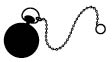

Yaşını başını almış bir adamım. Son otuz yıldır sürdürdüğüm mesleğimin doğası gereği ilginç ve dikkat çekici denebilecek, ama bugüne kadar da haklarında bir şey yazıldığını duymadığım birtakım insanlarla sıradan sayılmayacak ilişkilerim oldu; hukuki belgeleri kopya edenlerden ya da kâtiplerden söz ediyorum. Gerek meslek gerekse özel hayatımda pek çoğuyla tanıştım ve eğer içimden gelirse, babacan beyefendilerin gülümseyerek, hassas kişilerin de gözyaşı dökerek dinleyeceği çeşitli hikâyeler anlatabilirim. Ama ömrüm boyunca gördüğüm ya da duyduğum en tuhaf kâtiplerden biri olan Bartleby’nin hayatının kısacık bir bölümü yanında bütün öteki kâtiplerin yaşamöyküleri solda sıfır kalır. Öteki kâtiplerin hayatlarını baştan sona yazabilirim ama Bartleby söz konusu olduğunda böyle bir şey mümkün değildir. Bu adamın yaşamöyküsünü eksiksiz ve tatmin edici bir şekilde yazmak için gerekli malzemenin mevcut olmadığını sanıyorum. Edebiyat için onulmaz bir kayıp. Bartleby, özgün kaynaklardan sağlanacaklar dışında hakkında hiçbir araştırma yapılamayacak insanlardan biriydi, ki onun durumunda bu kaynaklar da pek sınırlı. Bartleby hakkında bildiğim tek şey, hikâyenin sonlarında ortaya çıkacak muğlak bir rapor dışında, kendi şaşkın gözlerimin onda gördüğüyle sınırlı.
Bu kâtibi, ilk karşılaştığım haliyle sizlere tanıtmadan önce, kendimden, yanımda çalışanlardan, işimden, büromdan ve içinde bulunduğum çevreden biraz söz etmem uygun olur; çünkü az sonra tanıtacağım hikâyenin başkişisini yeterince anlayabilmeniz için bu saydıklarımı biraz anlatmalıyım.
Evvela: Gençliğimden bu yana, hayatı kolay tarafından yaşamanın, en iyi yaşama biçimi olduğuna körü körüne inanmış bir adamım. Bu nedenle, çok hareketli ve heyecanlı, hatta zaman zaman çalkantılı olduğu söylenen bir meslekten olsam da huzurumu bozacak türden şeyler başıma hiç gelmedi. Hırs filan bilmeyen, asla bir jürinin karşısında konuşmayan ya da herhangi bir biçimde halkın takdirini kazanmayan avukatlardanım; kuytu ve sakin köşeme çekilip zenginlerin hisse senetleri, ipotekleri ve tapu senetlerinin arasında rahat rahat çalışıyorum. Beni tanıyan herkes, işimi son derece sağlam tuttuğumu bilir. Duygusal aşırılıklara yüz vermeyen merhum John Jacob Astor, benim en önemli özelliğimin sağduyu olduğunu tereddütsüz söylerdi; ikincisi de sistemmiş. Bunu kibirden söylemiyorum, sadece merhum John Jacob Astor’un mesleki konularda bana başvurmuş olduğunu ifade etmek istiyorum; itiraf edeyim ki onun adını tekrarlamak hoşuma gidiyor, çünkü o adın yuvarlak ve dairesel bir tınısı var ve altın paralar gibi şıkırdıyor. Şunu da rahatça ekleyeyim ki, merhum John Jacob Astor’un hakkımda ne düşündüğü benim için önemliydi.
Bu küçük hikâyenin başladığı günlerden kısa bir süre önce işlerim bir hayli artmıştı. New York Eyaleti’ndeki, artık kapatılmış olan bir mühürdarlık bürosunu1 ben işletiyordum. İşlerim fazla yoğun değildi ama tatmin edici gelir getiriyordu. Ben pek sık sinirlenen biri değilim; hele uğradığım haksızlıklar ve hakaretler karşısında kendimi kaybedip büyük bir öfkeye kapıldığım az görülür; ancak izin verirseniz bu noktada ağzıma geleni söylemek ve yeni anayasayla mühürdarlık bürosunun bir anda, gözümüzün yaşına bakılmadan kapatılmasını zamansız bir karar olarak gördüğümün bilinmesini istiyorum; ben bu işten ömür boyu kâr elde etmeyi bekliyordum, oysa birkaç yılın geliriyle yetinmek zorunda kaldım. Sırası gelmişken söyleyeyim dedim.
Bürom Wall Street’te, ... numaralı binanın üst katındaydı. Bir tarafı, bulunduğu binanın temelinden çatısına kadar uzanan geniş bir aydınlık boşluğunun beyaz duvarına bakıyordu. Bu görüntü, manzara ressamlarının “hayat” dediği şeyin eksikliği düşünülürse oldukça yavan sayılabilirdi. O taraf öyleydi ama büromun öbür yanındaki manzara, ilkini telafi ediyor sayılmasa da, en azından onun tam tersiydi. Büromun o yöne bakan pencerelerinin karşısında, yıllar boyu ve sürekli gölgede kalmak yüzünden kararmış yüksek bir tuğla duvar vardı; bu duvarın gizli güzelliklerini keşfetmek için dürbüne gerek yoktu, neyse ki duvar, miyop seyirciler de bu güzellikten yararlansın diye, penceremin üç metre yakınına kadar sokulmuştu. Çevredeki binaların epeyce yüksek oluşu ve büromun ikinci katta bulunması yüzünden, bu duvarla benim büromun duvarı arasında kalan boşluk, devasa, dört köşe bir sarnıcı andırıyordu.
Bartleby’nin gelişinden hemen önceki günlerde yanımda iki yazıcı çalışıyordu, bir de getir-götür işlerine bakan yetenekli bir delikanlı. Yazıcıların biri Hindi, ikincisi Kerpeten’di, genç çocuk da Zencefil. Bunlar size, telefon rehberinde benzerlerine pek rastlanmayan isimler gibi görünebilir. Aslında, yanımda çalışan üç kişinin birbirlerine taktıkları adlardı ve o adların, her birinin kişiliğini ya da karakter özelliklerini temsil ettiğini düşünüyorlardı. Hindi, benim yaşlarımda, yani altmışına yakın, tıknaz, şişman bir İngiliz’di. Sabahları yüzünün rengi kırmızıya çalıyordu diyebilirim, ama öğlen saat on ikiden sonra –o saatte yemek yerdi– Noel günü şöminenin ızgarasının üzerini dolduran kömürler gibi parıldardı; akşamın saat altısına kadar filan –ama rengi adeta gitgide solarak– böyle parıldamaya devam ederdi; o saatten sonra o suratın sahibini görmezdim, o surat güneşle birlikte tepeye yükselir ve onunla birlikte batardı sanki, ertesi gün yükselir, tepeye çıkar ve tekrar inerdi, güneş gibi düzenli, güneş gibi görkemliydi. Ömrüm boyunca rastlantılara sık sık tanık oldum, bunların önde gelenlerinden biri şudur: Hindi’nin kıpkırmızı kesilmiş suratının tam anlamıyla ışıl ışıl parladığı an, günün geri kalanında çalışma yeteneğinin de ciddi anlamda azalacağı sürenin başladığı o kritik âna denk gelirdi. Tembelin biri olması değildi mesele, çalışmak istemiyor da değildi, hiç değildi. Mesele, onun fazlasıyla enerjik olmasıydı. Hareketlerinde tuhaf, öfkeli, telaşlı ve dikkatsizdi. Kalemini mürekkep hokkasına batırırken çok özensizdi. Kâğıtlarımın üzerindeki bütün mürekkep lekeleri öğlen saat on ikiden sonraya aitti. Öğleden sonraları dikkatsiz çalışmakla, kâğıtları mürekkep lekesiyle doldurmakla kalmıyor, bazı günler daha da ileriye gidiyor, gürültülü çalışıyordu. Böyle zamanlarda suratındaki parıltı, taşkömürünün üzerine ince taneli kömür yığılmış gibi daha da göz alıcı oluyordu. Koltuğuyla sevimsiz gürültüler çıkarıyordu; kumlu kâğıt kurutma kabını deviriyordu; kalemlerini düzeltirken sabırsızlanıp hepsini kırıyor, ansızın öfkelenip yere fırlatıyordu; ayağa kalkıp masasına abanıyor, kâğıtlarını kaba saba hareketlerle kutuya dolduruyordu, ki onun gibi yaşlı bir adamı bu durumda görmek insanı üzüyordu. Bununla birlikte, pek çok bakımdan benim için çok değerli olduğundan ve öğlen saat on ikiye kadar çok hızlı, çok düzenli çalışıp eşine az rastlanır biçimde epeyce iş bitirdiğinden, onun tuhaflıklarını görmezden gelmeye razıydım, ancak ara sıra azarladığım da oluyordu. Ama bunu çok nazik bir biçimde yapıyordum, çünkü sabahları en uygar, yo, en mülayim, en saygılı insan olsa da öğleden sonraları, eğer kışkırtılırsa, ağzına geleni söylemeye yatkındı, hatta küstahlaşıyordu. Eh, onun sabahları verdiği hizmet benim için değerli olduğundan ve bu hizmetten yoksun kalmak istemediğimden, ama aynı zamanda saat on ikiden sonraki öfkeli halleri beni rahatsız ettiğinden ve huzursuzluğu sevmediğimden, öğüt verdiğimde ondan küstah yanıtlar almayı istemediğimden bir cumartesi günü öğle saatinde (cumartesileri daha da kötü olurdu) ona, son derece nazikçe, artık yaşlandığına göre çalışma saatlerini azaltmanın iyi olabileceğini ima ettim; kısacası, saat on ikiden sonra büroma gelmesine gerek olmayacaktı, yemeğini yer yemez evine gidebilir, çay saati gelene kadar dinlenebilirdi. Ama olmadı; öğleden sonraları da görevini sürdüreceğini ısrarla söyledi. Suratı kıpkırmızı kesildi, odanın öbür ucunda durup elindeki cetveli sallayarak, etkileyici bir konuşmayla, sabahları verdiği hizmet yararlı ise öğleden sonraları orada bulunmasının mutlaka gerekli olduğunu anlattı bana.
“İzninizle, efendim,” dedi Hindi o gün, “ben kendimi sizin sağ kolunuz sayıyorum. Sabahları kıtalarımla ilgilenip düzene sokuyorum onları; öğleden sonraları başlarına geçiyor ve düşmana kahramanca saldırıyorum, işte böyle!” diyerek elindeki cetvelle şiddetli bir hamle yaptı.
“Ama mürekkep lekeleri, Hindi…” diyecek oldum.
“Doğru – ama izninizle efendim, su saçlara bakın! Yaşlanıyorum. Elbette efendim, saçına kır düşmüş biri sıcak bir öğle sonrasında yapılan bir-iki leke yüzünden pek suçlanmamalı. Yaşlılara –mürekkep lekesi yapsa bile– saygı gösterilmeli. İzninizle efendim, ikimiz de yaşlanıyoruz.”
Duygudaşlığıma yöneltilmiş bu sözlere karşı koymak zordu. Ne olursa olsun, onun gitmeyeceğini anlamıştım. Böylece kalmasına karar verdim, ancak öğleden sonraları fazla önemli olmayan belgelerle ilgilenmesine dikkat edecektim.
Listemdeki ikinci kişi, Kerpeten, uzun favorili, beti benzi solgun ve genel görünüşüyle korsanı andıran, yirmi beş yaşlarında genç bir adamdı. Onun iki kötü gücün kurbanı olduğunu düşünürdüm hep: hırs ve sindirim bozukluğu. Hırsı kendini, kâtiplik görevini yerine getirirken gösterdiği tahammülsüzlükte, yasal belgelerin hazırlanması gibi uzmanlara bırakılması gereken işlere hoş görülmeyecek biçimde el atmasında gösteriyordu. Sindirim bozukluğunun belirtisi de, ara sıra asabileşmesi, öfkelenip pis pis sırıtması, yazarken yanlış yaparsa dişlerini sesli sesli gıcırdatması; telaş içinde çalışırken konuşarak değil de tıslayarak gereksiz lanetler okuması; özellikle de çalıştığı masanın yüksekliğinden sürekli yakınmasıydı. Kerpeten, teknik konularda son derece yetenekli olmasına rağmen, bu masaya bir türlü uyum sağlayamamıştı. Altına yongalar, çeşit çeşit tahta parçaları, küçük kartonlar yerleştirmişti, hatta daha da ileri gitmiş, birkaç tabaka kurutma kâğıdını katlayıp masanın altına sokarak dengesini ayarlamaya çalışmıştı. Ama yaptıklarının hiçbiri işe yaramadı. Sırtı rahat etsin diye masasının kapağını dikleştirip çenesine yaklaştırdığında ve o şekilde oturup bir Hollanda evinin eğik damını yazı masası olarak kullanırcasına çalıştığında, kollarındaki kan dolaşımının engellendiğinden yakınıyordu. Öte yandan masayı alçaltıp belinin seviyesine getirdiğinde ve yazarken üzerine eğildiğinde bu sefer de sırtı ağrıyordu. Kısacası, işin aslı, Kerpeten’in ne istediğini bilmediğiydi. Ya da istediği bir şey varsa o da, kâtip masasından tümüyle kurtulmaktı. Onun hastalıklı hırsının belirtileri arasında, müşterilerim dediği birtakım hırpani kılıklı, karanlık tipli kişilerin ziyaretlerinden hoşlanması da vardı. Gerçekten de, onun zaman zaman hatırı sayılır bir mahalle siyasetçisi olduğunun farkındaydım, bununla da kalmıyordu, ara sıra adliyede de birtakım işler çeviriyor, Tombs’da2 da tanınıyordu. Bununla birlikte, benim büromda onu ziyaret eden ve Kerpeten’in kurumlanarak, müşterisi olduğunda ısrar ettiği bir adamın, alacaklıdan başka biri olmadığına, sözüm ona tapu senedinin de bir borç senedi olduğuna eminim. Ne var ki bütün hatalarına ve canımı sıkmasına rağmen Kerpeten de, yurttaşı Hindi gibi, çok işime yarıyordu; elyazısı güzel ve işlekti; ve eğer canı isterse bir beyefendi gibi davranmasını da biliyordu. Ayrıca, her zaman bir beyefendiye yakışır tarzda giyiniyor, böylece büromun saygınlığına katkısı oluyordu. Hindi’ye gelince, beni mahcup etmemesi için epeyce çaba harcamam gerekiyordu. Giysileri yağlı görünüyordu, üzerlerine aşevlerinin kokusu sinerdi. Yazın bol ve çuval gibi pantolonlar giyerdi. Ceketleri iğrençti; şapkaları ise ele alınacak gibi değildi. Şapkaları pek umurumda olmazdı, zaten örnek bir İngiliz olarak, doğuştan nazik ve saygılıydı, bir odaya girer girmez şapkasını başından çıkarıyordu, ceketine gelince iş değişiyordu. Ceketleri konusunda onu ikna etmeye çalıştım, ama başaramadım. Aslında, sanırım, geliri bu kadar düşük bir adam aynı anda hem bu kadar ışıldayan bir surata hem de ışıldayan bir cekete sahip olamıyordu. Kerpeten’in bir keresinde dediği gibi, Hindi’nin parasının büyük bölümü alacaklılarına gidiyordu. Bir kış günü Hindi’ye, epeyce düzgün görünüşlü ceketlerimden birini verdim, çok güzel ısıtan, kalın astarlı, dizden boyna kadar düğmeli, gri bir ceket. Hindi’nin bu iyiliğimi takdir edeceğini, öğle sonralarındaki telaşlı hallerinden ve gürültücülüğünden vazgeçeceğini sandım. Ama yo. Böyle yumuşacık ve sıcacık tutan bir ceketi giymenin onun üzerinde olumsuz bir etkisi olduğuna yürekten inanıyorum; arpanın fazlasının ata zarar vermesi gibi tıpkı. Aslında, atak, tez canlı bir atın yerinde duramadığı söylenir ya, işte Hindi de öyle biriydi. O palto onu saygısızlaştırdı. Refah içinde olmak yaramıyordu ona.
Hindi’nin zevkine düşkünlüğü konusunda kendime ait tahminlerim olsa da Kerpeten’in, başka bakımlardan hataları bir yana, en azından içkiye düşkün denmeyecek bir genç adam olduğuna emindim. Ama bizzat doğanın kendisi ona sakilik yapmıştı sanki, doğarken onu öyle bir asabi, öyle esrik yaratmıştı ki, başka bir içki içmesine gerek kalmıyordu. Şimdi sakin büromda otururken, Kerpeten’in bazen yerinden sabırsızca kalktığını, masasının üzerine abandığını, kollarını iki yana açarak masayı yakalayıp yerinden oynattığını, sanki masa onun planlarını bozan, canını sıkan bir odacıymış gibi vahşice, zemine sürterek çektiğini düşününce, Kerpeten için konyak ve suyun tamamıyla gereksiz olduğuna iyice inanıyorum.
Kerpeten’in öfkesi ve asabiyeti, özel bir nedenden –sindirim bozukluğundan– kaynaklandığından, asıl sabahları ortaya çıktığı için şanslı sayılırdım, öğleden sonraları görece yumuşardı. Hindi’nin krizleri de saat on iki civarında başladığından ikisinin taşkınlıklarıyla aynı anda uğraşmak zorunda kalmazdım. İkisinin krizleri nöbet değiştirir gibi sırayla gelirdi. Kerpeten’inki başladığında Hindi’ninki henüz ortaya çıkmamış olurdu; ve tersi. Durumumuz düşünüldüğünde, kendiliğinden oluşmuş iyi bir düzenlemeydi bu.
Sıradaki üçüncü kişi olan Zencefil, on iki yaşlarında bir gençti. Babası arabacıydı, ölmeden önce oğlunu at arabasında değil de yargıç kürsüsünde otururken görmeyi arzuluyordu. Bu nedenle de onu, hem hukuk öğrensin hem de getir-götür işlerine baksın, temizlik yapsın diye yanıma vermişti, haftada bir dolar da ücret alacaktı. Küçük bir masası vardı kendine ait, ama pek kullanmazdı onu. Açıp baktığımda, masanın çekmecesinde bol miktarda ceviz, fındık-fıstık kabuğu görmüştüm. Saygın hukuk ilminin tamamı, bu cin gibi genç için bir ceviz kabuğuna sığıyordu demek. Hindi ile Kerpeten’e çörek ve elma sağlamak, Zencefil’in görev listesinin başlarında yer alıyordu, üstelik büyük bir hevesle yerine getiriyordu bu işi. Hukuk belgelerinin kopyasını çıkarmanın kuru ve insanın boğazını kurutan bir iş olduğu bilinir, bu nedenle de her iki kâtibim ağızlarının kuruluğunu sık sık, gümrük binasının ve postanenin yakınındaki tezgâhlardan alınabilen Spitzenberg elmalarıyla gidermek istiyorlardı. Ayrıca Zencefil’i sürekli o tuhaf –küçük, yassı, yuvarlak ve oldukça baharatlı– kurabiyelerden almaya gönderiyorlardı, zaten Zencefil adını da çocuğa bu kurabiyeler yüzünden takmışlardı. İşlerin yoğun olmadığı soğuk sabahlarda Hindi bu kurabiyeleri fındık-fıstık yer gibi avuç avuç yalayıp yutardı –nasıl olsa altı-sekiz tanesi bir peniye satılıyordu– kaleminin cızırtısı ağzındaki gevrek parçaların çıtırtısına karışırdı. Hindi’nin öğleden sonraları hatalar yaptığını, tedbirsizce ve telaşla çalıştığını söylemiştim, hatta bir keresinde bir zencefilli kurabiyeyi dilinde ıslatıp ipotek senetlerinden birine mühür diye yapıştırmıştı. Az daha kovuyordum onu o gün. Ama önümde yerlere kadar eğilerek dil döktü, “İzninizle efendim,” dedi, “büro malzemesini kendi cebimden karşılamam büyük bir cömertlikti.”
Eski işim –gayrimenkul devir işleri, mülkiyet hakkı takibi, her türlü karmaşık belgenin hazırlanması gibi– mühürdarlık bürosunu devraldıktan sonra epeyce artmıştı. Kâtiplere de çok iş çıkıyordu artık. Yanımdaki memurları daha hızlı çalışmaya zorlamakla kalmayıp yardımcı eleman da almam gerekti. Verdiğim ilan üzerine, bir sabah büromun kapısında sakin görünüşlü bir genç adam belirdi, yaz olduğu için kapı açıktı. Onu şimdi görür gibiyim; sırtındaki solmuş ama derli toplu giysisiyle, acınası bir saygınlık ve koyu bir umutsuzluk içindeydi! Gelen, Bartleby idi.
Nitelikleri üzerine biraz konuştuktan sonra onu işe aldım, kâtip kadroma bu kadar az bulunur efendilikte bir adam katmaktan memnundum, aklına eseni yapan Hindi’nin üzerinde de, çabuk öfkelenen bir yapıya sahip Kerpeten’in üzerinde de olumlu etkisi olabilirdi.
Büromu buzlu camdan bir katlanır kapının ikiye böldüğünden daha önce söz etmeliydim, bölmenin birini ben, öbürünü de kâtiplerim kullanıyordu. Keyfime göre ya açıyordum bu kapıyı ya da kapatıyordum. Katlanır kapının benim tarafımdaki kısmında kalan köşelerden birini Bartleby’ye ayırmaya karar verdim, ufak bir işim olduğunda bu sakin adam elimin altında olacaktı böylece. Onun masasını yan duvardaki küçük bir pencerenin hemen yakınına koydum, eskiden o pencereden bakınca çirkin arka avlular ve tuğla binaların yan yüzleri görünürdü, ama daha sonra yükselen yapılar yüzünden artık hiçbir şey görünmüyordu, yine de biraz ışık alıyordu oda. Pencerenin karşısında, bir metre kadar uzakta bir duvar vardı, ışık da epeyce yukarıdan, bir kubbedeki incecik bir yarıktan sızarcasına iki yüksek binanın arasından geliyordu. Odamda yaptığım değişikliği daha da elverişli kılmak için katlanabilen, yüksek, yeşil bir paravan yerleştirdim oraya, bu durumda Bartleby’yi görmeyecek ama sesimi duyurabilecektim. Böylece, bir biçimde hem mahremiyetimizi koruyabilecek hem de bir arada olabilecektik.
İlk başta, Bartleby inanılmaz miktarda yazı yazdı. Uzun zamandır yazı yazmak için yanıp tutuşmuşçasına belgelerime saldırıyordu. Hiç durup dinlenmedi. Gece gündüz çalıştı, gün ışığında, mum ışığında yazdı da yazdı. Çalışırken neşeli de olsaydı onun bu çalışma tarzı pek hoşuma giderdi. Ama Bartleby hiç konuşmadan, donuk donuk, makine gibi yazıyordu.
Kopya ederek yazdıklarının, kelimesi kelimesine doğru olup olmadığını kontrol etmek, bir kâtibin işinin olmazsa olmazıdır elbette. Bir büroda iki ya da daha fazla kâtip varsa bu karşılaştırma sırasında birbirlerine yardım ederler, biri kopya ettiği yazıyı okur, öbürü de orijinalini. Çok sıkıcı, yorucu ve insanı uyuşturan bir iştir bu. Yerinde duramayan kişiler için tahammül edilmez bir iş olduğunu tahmin edebiliyorum. Örneğin, ateşli bir şair olan Byron’un seve seve Bartleby’nin yanına oturup kargacık burgacık bir elyazısıyla doldurulmuş beş yüz sayfalık bir hukuki belgeyi karşılaştıracağına inanamam.
Ara sıra, eğer iş aceleyse, Hindi’yi ya da Kerpeten’i yanıma çağırıp bazı kısa belgelerin karşılaştırılmasına yardım etmişliğim vardır. Bartleby’yi hemen yakınıma, paravanın arkasına oturtmamın amaçlarından biri, bu tür küçük işlerde hizmetinden yararlanmaktı. Sanırım işe başlayışının üçüncü günüydü, onun yazdıklarını kontrol etmeye sıra gelmemişti henüz, elimdeki küçük bir işi acele bitirmem gerektiğinden hemen Bartleby’yi yardıma çağırdım. Hem telaşlıydım hem de doğal olarak bana hemen itaat edilmesini bekliyordum, başımı belgenin aslına eğmiş masamda oturuyordum, biraz da sinirliydim, yazının kopyasını tuttuğum sağ elimi yana doğru uzatmıştım ki, Bartleby oturduğu yerden çıkıp yanıma gelir gelmez onu çekip alabilsin ve hiç gecikmeden işe koyulsun.
Ona seslendiğimde tam da bu konumda oturuyordum, kendisinden ne istediğimi hızlıca anlattım: benimle birlikte küçük bir belgeyi kontrol edecekti. Bartleby, paravanın arkasında oturduğu yerden son derece yumuşak, ama kararlı bir sesle, “Yapmamayı tercih ederim,” dediğinde yaşadığım şaşkınlığı, yo, dehşeti bir düşünün.
Bir süre ses çıkarmadan oturdum, kafamı toplamaya çalıştım. Önce, kulaklarımın beni yanıltmış olabileceği geldi aklıma ya da Bartleby sözlerimi tamamıyla yanlış anlamıştı. Olabildiğince tane tane konuşarak isteğimi yineledim. Karşılığında açık seçik aynı yanıt geldi: “Yapmamayı tercih ederim.”
“Yapmamayı tercih ederim mi,” diye yankıladım, ayağa fırlayıp bir adımda odanın öbür yanına giderek. “Ne demek istiyorsunuz siz? Delirdiniz mi? Şu sayfayı karşılaştırırken bana yardım etmenizi istiyorum – alın şunu,” diyerek ona doğru fırlattım kâğıdı.
“Yapmamayı tercih ederim,” dedi.
Gözlerimi diktim ona. Yüzü ince uzundu; kurşuni renkteki gözleri donuk ve sakin bakıyordu. Yüzünde telaşlandığını gösteren en ufak bir belirti yoktu. Tavrında en ufak bir tedirginlik, öfke, sabırsızlık ya da küstahlık olsaydı, diğer bir ifadeyle, halinde sıradan bir insana özgü herhangi bir şey olsaydı, kuşkusuz o anda kapı dışarı ederdim onu. Ama durum öyleydi ki, ha Bartleby’yi kovmuştum ha karşımdaki Cicero’nun alçıdan yapılma büstünü. Bartleby yazı yazmaya devam ederken bir süre gözlerimi ona dikip kaldım, sonra yeniden masama dönüp oturdum. Ne tuhaf bir şey bu, diye düşündüm. Ne yapmalıydım? Ama işim aceleydi. Şimdilik bu konuyu aklımdan çıkarmaya, daha sonra ilgilenmeye karar verdim. Öbür odadan Kerpeten’i çağırdım, belgeyi hızlıca kontrol ettik.
Bu olaydan birkaç gün sonra Bartleby dört tane uzun belgeyi yazıp bitirdi, bağlı olduğum mahkemede benim önümde alınmış bir haftalık tanık ifadelerinin dört kopyasıydı bunlar. Onları kontrol etmek gerekiyordu. Çok önemli bir davaydı ve kesinlikle hata yapılmamalıydı. Her şeyi düzenleyip Hindi, Kerpeten ve Zencefil’i yan odadan çağırdım, dört kopyayı dört memurumun eline verecektim, ben de orijinalinden okuyacaktım. Hindi, Kerpeten ve Zencefil ellerine belgeleri alıp yan yana oturdular, bu ilginç gruba katılması için Bartleby’ye seslendim.
“Bartleby, çabuk olun! Bekliyorum.”
Koltuğunun ayaklarının çıplak zeminde hafifçe gıcırdadığını duydum, çok geçmeden de inzivasının girişinde belirdi.
“Ne istemiştiniz?” diye sordu, usulca.
“Kopyalar, kopyalar,” dedim telaşla. “Karşılaştıracağız. Alın,” diyerek dördüncü kopyayı uzattım ona.
“Yapmamayı tercih ederim,” dedi ve yavaşça paravanın arkasında gözden kayboldu.
Yan yana oturmakta olan memurlarımın başında dikilirken bir-iki saniye şaşkınlıktan donup kaldım. Sonra kendimi toparladım, paravana yaklaştım ve bu tuhaf tavrının nedenini sordum ona.
“Neden reddediyorsunuz?”
“Yapmamayı tercih ederim.”
Bartleby’nin yerinde başkası olsa öfkeden köpürür, başka bir şey söylemez ve onu rezil edip yanımdan kovardım. Ama Bartleby’de öyle bir şey vardı ki nedense elimi kolumu bağlamakla kalmıyor, beni olağanüstü etkiliyor, huzurumu kaçıyordu. Onu ikna etmeye çalıştım.
“Bu karşılaştıracaklarımız sizin çıkarttığınız kopyalar. Sizin işinizi hafifletecek, çünkü bir defada dört kopyanızı da karşılaştırmış olacağız. Genel uygulama bu. Her kâtip kendi kopyasının karşılaştırılmasına yardım etmelidir. Öyle değil mi? Konuşsanıza! Yanıt verin bana!”
“Yapmamayı tercih ederim,” oldu yanıtı, flüt sesi gibiydi sesi. Ben onunla konuşurken söylediğim her sözü dikkatle ölçüp biçiyor gibi geldi bana; ne demek istediğimi tam olarak anlıyor, kaçınılmaz sonucunu yadsıyamıyor, ama aynı zamanda kendisine hâkim olan önemli bir düşünce o yanıtı verdiriyordu.
“Demek isteğimi yerine getirmemekte kararlısınız – genel uygulamaya ve sağduyuya uygun olarak sizden istediğimi?”
Bu konudaki düşüncemin doğru olduğunu kısaca belli etti bana. Evet: Verdiği karardan dönmeyecekti.
Beklenmedik ve tam anlamıyla akıl almaz bir biçimde gözü korkan bir insanın, en temel inancının bile sarsılması sık görülen bir şeydir. Şaşılacak bir şey ama, adaletin ve sağduyunun tamamıyla öbür tarafın lehine işlediğinden kuşku duymaya başlar adeta. Dolayısıyla, yanında konuyla ilgisiz insanlar varsa, kendi bocalayan zihnine destek olsunlar diye onlardan medet umar.
“Hindi,” dedim, “sen ne düşünüyorsun bu konuda? Haksız mıyım ben?”
“İzninizle efendim,” dedi Hindi, en kibar tavrıyla, “bence haklısınız.”
“Kerpeten,” dedim, “sen ne düşünüyorsun?”
“Bana kalsa kıçına tekmeyi vurur, atardım onu dışarı.”
(Dikkatli okur, bu noktada, sabah olduğu için Hindi’nin nazik ve sakin konuşarak yanıt verdiğini ama Kerpeten’in hırçın olduğunu fark edecektir. Ya da, daha önceki bir cümlemi tekrarlamam gerekirse, nöbet sırası Kerpeten’in huysuzluğundaydı, Hindi’ninki devre dışıydı.)
“Zencefil,” dedim, en ufak destekten bile yararlanmak amacıyla, “sen ne düşünüyorsun bu olanlar için?”
“Bence efendim, bu adam biraz kaçık,” dedi Zencefil, sırıtarak.
“Söylenenleri duyuyorsunuz,” dedim, paravana dönerek, “buraya gelin ve görevinizi yerine getirin.”
Yanıt vermeye tenezzül etmedi. Kafam fena halde karışmıştı, bir an durup düşündüm. Ama işlerim aceleydi. Bu meseleyi daha sonra ele almaya, daha rahat bir zamanıma ertelemeye karar verdim yine. Biraz zorlansak da Bartleby olmadan kâğıtları karşılaştırmanın üstesinden geldik, ama Hindi, bir-iki sayfada bir, bu yapılanın alışıldık bir şey olmadığı fikrini saygılı bir biçimde dile getiriyordu; Kerpeten ise koltuğunda, hazımsızlık çeker gibi sinir içinde kıpırdanarak, sıktığı dişlerinin arasından tıslayarak ara sıra paravanın arkasındaki inatçı hödüğe beddualar okuyordu. Kendi (yani Kerpeten’in) açısından, başkasının işini ilk ve son kez bedavaya yaptığını söylüyordu.
O arada Bartleby inzivasında oturuyor, önündeki iş dışında her şeye kulaklarını tıkıyordu.
Aradan birkaç gün geçti, kâtibin elinde yine uzun sürecek bir iş vardı. Geçen günkü tuhaf davranışı yüzünden yaptıklarını dikkatle izliyordum. Hiç öğle yemeğine çıkmıyordu; aslında hiçbir yere gitmiyordu. O güne kadar, bildiğim kadarıyla, büronun dışına adım atmamıştı. Köşesinde sürekli nöbet tutar gibiydi. Sabahları saat on bir sularında Zencefil’in, oturduğum yerden göremeyeceğim bir el hareketiyle sessizce oraya çağrılmış gibi, Bartleby’nin paravanının aralığına yaklaştığını fark etmiştim. Sonra elindeki birkaç metal parayı şıkırdatarak bürodan çıkıyor, bir avuç dolusu zencefilli kurabiyeyle dönüyor, onları inzivadakine veriyordu, zahmeti karşılığında da kurabiyelerden ikisini alıyordu.
Demek zencefilli kurabiyeyle besleniyor, diye düşündüm; öyleyse hiç yemek yemiyor; vejetaryen olmalı; ama yo, sebze bile yemiyor, zencefilli kurabiyeden başka bir şey yemiyor. O zaman, sadece zencefilli kurabiyeyle beslenmenin insan yapısına olası etkileri üzerine fikir üretmeye başladım. Bu kurabiyelere zencefilli denmesinin nedeni, içindeki tuhaf malzemelerden birinin ve tadını verenin zencefil olması. Peki, zencefil neydi? Sıcak, baharatlı bir şey. Bartleby sıcak ve baharatlı mıydı? Hiç de değil. Demek ki zencefilin Bartleby üzerinde bir etkisi yoktu. Herhalde o da olmamasını tercih ediyordu.
Azimli bir insanı pasif direniş kadar çileden çıkaran bir şey yoktur. Direnilen kişi acımasız değilse, direnen kişinin pasifliğinin de bir zararı dokunmuyorsa, o zaman direnilen kişi, iyi günündeyse, sağduyusuyla çözemediği şeylerin üstesinden hayal gücünü şefkatle kullanarak gelmeye çalışacaktır. Ben de Bartleby’ye çoğunlukla bu gözle baktım işte. Zavallıcık! diye düşünüyordum, aklında fesatlık yok; saygısızlık yapmak istemediği de belli; garip davranışlarının kasıtlı olmadığı suratından yeterince anlaşılıyor. Benim işime yarıyor. Onunla geçinebilirim. Onu kapının önüne koyarsam, benim kadar hoşgörülü olmayan bir işverene denk gelebilir, o zaman da kötü muamele görür, belki de sefalet içinde açlıktan ölür. Evet. Kendi kendimden hoşnut olmam için basit bir fırsat çıktı önüme. Bartleby ile arkadaş olabilirim; onun o tuhaf inatçılığına ayak uydurmak, bana bedavaya ya da pek az paraya mal olur, ben de sonunda vicdanım için hoş bir teselli olabilecek şeyi ruhumda depolayabilirim. Ancak her zaman bu ruh halinde olmuyordum. Bartleby’nin bu pasifliği bazen kızdırıyordu beni. Garip ama bir kez daha bana karşı gelse diye içim içimi yiyordu, benim öfkeme karşılık sayılacak bir kıvılcım tutuşturmak istiyordum onda. Oysa ha bunu arzulamıştım ha kibritsiz ateş yakmaya çalışmıştım. Ama bir gün öğleden sonra, içimdeki şeytan dürttü beni ve şimdi anlatacağım sahne yaşandı:
“Bartleby,” dedim, “o kâğıtların kopyalanması bittikten sonra sizinle birlikte karşılaştırmak istiyorum.”
“Yapmamayı tercih ederim.”
“Nasıl? Katır inadınızı sürdürmek istemiyorsunuzdur herhalde?”
Yanıt gelmedi.
Yanımdaki katlanır kapıyı çekip açtım, Hindi ile Kerpeten’e dönüp heyecanlı bir sesle seslendim:
“Kâğıtlarını karşılaştırmayacağını ikinci kez söylüyor. Sen ne dersin buna, Hindi?”
Unutmayın, öğle sonrasıydı. Hindi pirinç bir çaydanlık gibi ışıl ışıl, saçsız kafasından buhar çıkarak oturuyordu orada, elleri mürekkep lekeli kâğıtlarının arasında geziniyordu.
“Ne mi derim?” diye kükredi. “Paravanın arkasına geçer, gözünü morartırım!”
Bunu der demez ayağa fırladı Hindi, kollarını boks yapacakmış gibi kaldırdı. Söylediğini uygulamak için harekete geçmişti ki ona engel oldum, tedbirsiz davranıp yemekten sonra Hindi’nin savaşkanlığını harekete geçirmiştim, bu da beni korkutmuştu.
“Otur yerine, Hindi,” dedim, “bakalım Kerpeten ne diyecek. Sen ne düşünüyorsun, Kerpeten? Bartleby’yi hemen kovmakta haklı değil miyim?”
“Bağışlayın efendim, ama bu kararı siz vermelisiniz. Bartleby’nin davranışını gerçekten garip buluyorum ve Hindi ile bana karşı haksızlık da. Ama gelip geçici bir huysuzluk olabilir.”
“Ya,” diye atıldım, “çok tuhaf, demek fikrini değiştirdin, pek de nazikçe söz ediyorsun şimdi ondan.”
“Bira yüzünden,” diye bağırdı Hindi, “onun bu nezaketinin nedeni bira – Kerpeten’le ben bugün birlikte yemek yedik. Bakın, ben ne kadar naziğim, efendim. Gidip gözünü morartayım mı şunun?”
“Sanırım kastettiğin kişi Bartleby. Yo, bugün olmaz, Hindi,” diye karşılık verdim ona; “lütfen, indir şu yumruklarını.”
Kapıyı çekip kapadım ve yeniden Bartleby’ye yaklaştım. Beni bekleyen kaderime doğru gitmem için kışkırtılıyordum. Bartleby bana yine kafa tutsa diye deli oluyordum. Onun bürodan hiç çıkmadığı geldi aklıma.
“Bartleby,” dedim, “Zencefil burada değil, postaneye kadar gider misiniz? (Üç dakikalık yerdeydi.) Bakın bakalım bana bir şey var mı?”
“Yapmamayı tercih ederim.”
“Yapmamayı mı?”
“Yapmamayı.”
Tökezleyerek gittim masama ve oturup kara kara düşünmeye başladım. O saçma tutukluğum geri geldi. Bu çelimsiz, züğürt insan –yanımda çalışan memurum– beni aşağılayarak karşı çıksın diye daha nasıl bir şey bulabilirdim? Onun yapmayı mutlaka reddedeceği, baştan sona mantıklı başka bir şey var mıydı?
“Bartleby!”
Yanıt yok.
“Bartleby!” Sesimi yükseltmiştim.
Yanıt yok.
“Bartleby!” diye kükredim.
Ruh çağırırken geçerli olan kurallara uygun davranan bir hayalet gibi, üçüncü seslenişimde inzivasının kapısında göründü.
“Yandaki odaya gidin ve Kerpeten’e buraya gelmesini söyleyin.”
“Yapmamayı tercih ederim,” dedi saygıyla ve alçak sesle, sonra da yavaşça gözden kayboldu.
“Pekâlâ, Bartleby,” dedim, az sonra almaya kararlı olduğum korkunç intikamın amacını ima edercesine sakin, ciddi ve durgun bir tavırla. O anda öyle bir şeyi amaçlıyor sayılırdım da. Öte yandan akşam yemeği saatim de yaklaşıyordu, şapkamı başıma oturtup o günlük artık evime dönsem iyi olur diye düşündüm, aklım karışmıştı, çektiğim sıkıntı da epeyce rahatsız ediyordu beni.
İtiraf etmeli miyim? Bütün bu işin sonucu şuraya vardı: Bartleby adında solgun benizli genç bir kâtip ve bir çalışma masası çok geçmeden büromun sabit birer parçası oldu; Bartleby sayfa başına (yüz kelime) dört sent karşılığında belgelerin kopyasını çıkarıyordu; ama kendi yaptığı işi karşılaştırmaktan sürekli kaçınıyor, bu iş Hindi ile Kerpeten’in sırtına yıkılıyordu; kuşkusuz onların üstün zekâlarına bir övgüydü bu; ayrıca adı geçen Bartleby hiçbir zaman ve hiçbir durumda en ufak bir işe gönderilmiyordu; kendisinden bir şey rica edilmiş bile olsa bu işi yapmamayı tercih edeceği –bir başka deyişle, tereddüt etmeden reddedeceği– herkesçe biliniyordu.
Günler geçtikçe Bartleby’ye epeyce alıştım. Sabrı, her türlü aşırılıktan uzak oluşu, sürekli çalışması (paravanının gerisinde ayakta uyumadığı zamanlar), sessizliği, her ne olursa olsun tavrının değişmeyişi, onu değerli bir kazanım haline getiriyordu. Mükemmel olan şuydu: O hep vardı; sabah ilk gelen oydu, gün içinde sürekli yerindeydi ve akşamları en son o çıkıyordu. Onun dürüstlüğüne özellikle güveniyordum. En değerli belgelerimin onun ellerinde güvende olduklarını hissediyordum. Zaman zaman, istemesem de, huyum böyleydi, ona karşı öfke nöbetlerine kapıldığım oluyordu. Çünkü Bartleby’nin büromda kalmasının sessiz koşulları olan o tuhaflıklarını, ayrıcalıklarını ve benzeri görülmemiş özgürlüklerini akılda tutmak son derece güçtü. Ara sıra, acil işleri yollamanın heyecanıyla, farkına varmaksızın, hemen Bartleby’yi çağırır, bazı kâğıtları sıkıştırmak için kullandığım bir parça kırmızı şeridin baş tarafına parmağını bastırmasını isterdim. Kuşkusuz, paravanın arkasından her zamanki “Yapmamayı tercih ederim” mutlaka gelirdi; o zaman, doğası gereği zaafa kapılan bir insan evladı böyle bir sapkınlığa, böyle bir mantıksızlığa acı acı söylenmez miydi? Bununla birlikte, karşılaştığım bu türden her yeni direniş, aynı dikkatsizliğe kapılma olasılığımı gitgide azaltıyordu.
Şunu söylemeliyim ki, kalabalık binalarda hukuk bürosu bulunan beyefendilerin çoğu gibi benim büromun da birkaç anahtarı vardı. Bir tanesi tavan arasında kalan, her hafta büromu köşe bucak temizleyen, her gün de süpürüp tozunu alan bir kadındaydı. İkincisi Hindi’deydi, lazım olur diye. Üçüncüsünü bazen cebimde taşırdım. Dördüncünün kimde olduğunu bilmiyordum.
Bir pazar sabahı ünlü bir vaizi dinlemek üzere Trinity Kilisesi’ne gidiyordum, oraya oldukça erken vardığımı görünce bir süreliğine büroma uğramaya karar verdim. Bereket anahtarım yanımdaydı; ama anahtarı kilide sokunca içeriden sokulu bir şeyin anahtara engel olduğunu anladım. Şaşırmıştım, seslendim; içeriden bir anahtar çevrilince donup kaldım; aralanan kapıdan başını uzatan, o zayıf suratıyla Bartleby idi, gömleğinin kolları sıvalıydı, üstü başı dökülüyordu, sakince özür diledi benden, ama çok meşguldü, öyle söyledi ve – o anda beni içeriye almamayı tercih ediyordu. Binanın çevresinde bir-iki tur atmamın iyi olacağını kısaca ekledi, kendisi de o zamana kadar işini bitirirdi.
Büromu bir pazar sabahı işgal eden, ceset gibi olsa da bir beyefendiye yakışır kayıtsızlığıyla, yine de kararlı ve özgüvenli haliyle hiç beklemediğim anda karşıma çıkan Bartleby beni öylesine şaşırttı ki dayanamayıp kendi kapımdan ayrıldım ve onun sözüne uydum. Uydum ama bu ne yapacağı bilinmeyen kâtibin ufak çaplı küstahlığına karşı yetersiz kalan bir isyanın ufak sızılarını hissetmedim değil. Gerçekten de esas itibariyle onun yumuşaklığıydı beni hem eli kolu bağlı bırakan hem de adeta yumuşatan. Çünkü, yanında çalışan bir memurun kendine hükmetmesine, kendi bürosundan kovalamasına ses çıkarmadan razı olan birinin haline yumuşamak derim ben. Ayrıca, Bartleby’nin, gömleğinin kolları sıvalı, üstü başı dağınık durumda bir pazar sabahı büromda ne aradığı konusunda da içim rahat değildi. Yolunda gitmeyen bir şeyler mi vardı? Yo, bu söz konusu bile olamazdı. Bartleby’nin ahlaksız olduğu bir an bile düşünülemezdi. Ama ne yapıyordu orada? Belgeleri mi kopyalıyordu? Bu da olmazdı, ne kadar tuhaf olursa olsun Bartleby fazlasıyla edepli bir insandı. Yarı giyinik denebilecek bir durumda masasının başına oturacak son kişiydi. Hem günlerden pazardı, Bartleby’de öyle bir şey vardı ki, dinle ilgili olmayan herhangi bir meşguliyetle bu günün kutsallığını ihlal edecek biri olduğu kesinlikle düşünülemezdi.
Yine de içim rahat değildi; sonunda kapıma döndüğümde hem tedirgin hem meraklıydım. Bir engelle karşılaşmadan anahtarı kilide soktum, açtım ve içeri girdim. Bartleby görünürde yoktu. Merakla etrafa bakındım, paravanın arkasına göz attım; ama gittiği besbelliydi. Büroyu daha dikkatle inceleyince Bartleby’nin bir süre orada yemek yemiş, soyunup giyinmiş ve uyumuş olduğundan kuşkulandım, hem de tabak-çanak, ayna ya da yatak kullanmadan. Bir köşede duran külüstür, eski bir kanepenin oturma yerindeki minderde, oraya uzanmış ince bir bedenin hafif izi kalmıştı. Masasının altında dürülmüş durumda bir battaniye buldum; şöminenin boş ızgarasının altında bir kara kutu ve fırça; bir iskemlenin üzerinde teneke bir leğen, yanında da sabun ve eprimiş bir havlu; bir gazetenin arasında zencefilli kurabiye kırıntıları ve bir parça peynir. Evet, dedim, Bartleby’nin burayı evi gibi kullandığı, bekâr evine çevirdiği anlaşılıyor. Nasıl da acınası bir arkadaşsızlık ve yalnızlık var gözlerimin önünde diye düşündüm birden. Yoksulluğu büyüktü, ama yalnızlığı, çok korkunçtu! Bir düşünün. Pazar günü Wall Street, antik Petra kenti kadar ıssız olurdu; geceleri de boşalırdı. İş günlerinde koşuşturmayla, hayatla dolup taşan bu bina da gece olunca bomboş yankılanır, pazar günü boyunca da terk edilmiş gibidir. Bartleby burasını kendine yuva edinmişti, kalabalıkken gördüğü yerde yalnızlığın tek seyircisiydi – Kartaca’nın harabeleri arasında kara kara düşünen bir tür masum ve biçim değiştirmiş Marius.3
Hayatımda ilk kez beni ezen, canımı yakan bir melankoli hissediyordum. Daha önce, hoşlanmadım diyemeyeceğim bir hüzün dışında buna benzer bir şey yaşamamıştım. Paylaşılan insanlığın bağı beni şimdi karşı konulmaz biçimde kedere boğuyordu. Kardeşlik melankolisi! Çünkü Bartleby de ben de Âdem’in oğullarıydık. O gün gördüğüm parlak ipekleri ve süslenip püslenerek Broadway’in Mississippi’sinde kuğular gibi süzülen ışıltılı yüzleri hatırladım; ve onları solgun benizli kâtiple kıyasladım, kendi kendime, ah mutluluk ışıkla cilveleşir, biz de dünyanın neşe dolu olduğunu düşünürüz, dedim; oysa ıstırap uzaklarda saklanır, biz de ıstırap yok sanırız. Kuşkusuz hasta ve budala bir beynin ürünü olan bu hüzünlü hayaller, Bartleby’nin tuhaflıklarına dair daha başka, daha ayrıntılı düşüncelere sevk ettiler beni. Tuhaf keşiflerde bulunacağım duygusuyla sarılıp sarmalandım. Kâtibin soluk görüntüsü geldi gözümün önüne: Umursamaz yabancıların arasında, bakanı ürperten kefeninin içinde karşımda yatıyordu.
Ansızın Bartleby’nin kapalı masası dikkatimi çekti, anahtarın kilide sokulu bırakıldığı açıkça görülebiliyordu.
Aklımda fesatlık yok, kafamı kurcalayan merakımı tatmin etmek istiyor da değilim, diye düşündüm; hem bu masa bana ait, içindekiler de, öyleyse içine bakmayı göze alabilirim. Her şey sistemli bir şekilde düzenlenmiş, kâğıtlar düzgünce yerleştirilmişti. Çekmeceler derindi, dosyaları çıkarırken elimi çekmecenin dibine doğru soktum. Elime bir şey geldi, tutup çektim. Eski, büyük bir mendildi, ağırdı, düğüm atılmıştı. Düğümü çözdüm, içinde istiflenmiş paralar vardı.
O adamda dikkatimi çeken bütün o sessiz, gizemli şeyler geldi aklıma. Yanıt vermek dışında ağzını hiç açmadığını hatırladım, ara sıra epeyce boş zamanı olmasına rağmen onu hiç kitap, hatta gazete bile okurken görmemiştim; paravanının arkasındaki soluk pencerede dikilip uzun uzadıya dışarıya, kör tuğla duvara bakıyordu; asla bir yemekhaneye ya da aşevine gitmediğine emindim, Hindi gibi biracı değildi, başkaları gibi çay ya da kahve içmediği de soluk benzinden açıkça anlaşılıyordu; gittiği yerler var mıydı, onu da bilmiyordum; asla yürüyüşe de çıkmazdı, şu anda çıkmamışsa tabii; kim olduğunu, nereden geldiğini ya da dünyada bir akrabası olup olmadığını söylemekten kaçınıyordu; bu kadar zayıf ve solgun olmasına rağmen hiçbir zaman sağlığından yakınmadığı da geldi aklıma. Ve bunların da ötesinde, üzerinde kasıtsız bir donukluk olduğunu hatırladım –nasıl söyleyeyim?– donuk bir kibir, örneğin, daha doğrusu ağırbaşlı bir çekingenlik; bu da beni ürkütmüş, onun tuhaflıklarına ses çıkarmadan katlanmama neden olmuştu, benim için ufacık bir iş görmesini istemeye korkmuştum, hem de uzun süre hareketsiz kalmasına bakarak paravanın arkasında dikildiğini, gözlerini kör duvara dikerek hayallere daldığını bilmeme rağmen.
Bütün bunları düşündüm ve az önce keşfettiğim gerçekle, yani büromu kendine kalacak bir yer, bir ev haline getirmiş olmasıyla birleştirdim, onun marazi huysuzluklarını da bu düşüncelerime ekleyince, daha ihtiyatlı davranmam gerektiği duygusuna kapıldım. İlk önce, sadece üzülmüş, yürekten acımıştım ona; ama Bartleby’nin yalnızlığı imgelemimde gitgide büyüdükçe o üzüntü korkuya, acıma hissim de tiksintiye dönüştü. Sefaleti düşünmenin ya da görmenin bir noktaya kadar içimizde şefkat uyandırması hem çok doğru hem de çok korkunçtur; ama bazı özel durumlarda, o noktanın ötesine geçmez duygularımız. Bunun tek suçlusunun insan ruhunda doğuştan bulunan bencillik olduğunu düşünürseniz yanılırsınız. Bunun nedeni, aşırı ve yapısal hastalıkları iyileştirme konusunda duyulan umutsuzluktur. Duyarlı biri için, acıma ile acı çoğunlukla aynı şeydir. Ve sonunda böyle bir acımanın yardıma yeterli olmayacağı anlaşıldığında sağduyu ruhun ondan kurtulmasını ister. O sabah gördüklerim, kâtibin doğuştan gelen, onulmaz bir rahatsızlığın kurbanı olduğuna inandırdı beni. Onun bedenine yardım edebilirdim; ama ona acı veren bedeni değildi; acı çeken ruhuydu ve ben onun ruhuna ulaşamazdım.
O sabah Trinity Kilisesi’ne gitme niyetimi gerçekleştiremedim. Nedense gördüğüm şeyler, o gün kiliseye gitmeme engel olmuştu. Eve doğru yürürken Bartleby’yi ne yapacağımı düşünüyordum. Sonunda şu karara vardım: Ertesi sabah, sükûnetimi bozmadan ona bazı sorular soracaktım, geçmişine filan değinecektim, eğer sorularıma açıkça ve dürüstçe yanıt vermekten kaçınırsa (ve bana kalırsa vermeyecekti de) o zaman ona, kendisine ne borcum varsa bol bol karşılayacak şekilde bir yirmi dolar uzatacak ve artık hizmetine ihtiyacım olmadığını söyleyecektim; ama eğer kendisine başka bir yardımım dokunabilecekse bunu seve seve yapacaktım, özellikle de geldiği yere, orası her neresiyse, dönmek isterse yol masraflarını karşılayacağımı söyleyecektim. Daha da ötesi, evine döndükten sonra, herhangi bir zaman yardıma ihtiyacı olursa, bana göndereceği mektubu kesinlikle yanıtsız bırakmayacaktım.
Ertesi sabah oldu.
“Bartleby,” dedim, paravanın arkasına doğru nazikçe seslenerek.
Yanıt yok.
“Bartleby,” dedim, daha da nazik bir sesle, “buraya gelin; yapmamayı tercih ettiğiniz bir şey isteyecek değilim sizden – sadece konuşmak istiyorum sizinle.”
Bunu duyunca sessizce çıktı ortaya.
“Nerede doğduğunuzu söyler misiniz bana Bartleby?”
“Söylememeyi tercih ederim.”
“Bana kendiniz hakkında herhangi bir şey söyler misiniz?”
“Söylememeyi tercih ederim.”
“Benimle konuşmamak için ne gibi mantıklı bir nedeniniz olabilir ki? Ben size dostane duygular besliyorum.”
Ben konuşurken yüzüme bakmıyordu, gözlerini Cicero’nun büstüne dikmişti, büst oturduğum yerin tam arkasında, başımın on beş santim kadar yukarısındaydı.
“Yanıtınız nedir, Bartleby?” diye sordum, konuşması için ona epeyce bir zaman tanıdıktan sonra; o süre boyunca yüzünde en ufak bir kıpırdama olmadı, sadece ince, beyaz dudakları belli belirsiz titriyordu.
“Şu anda yanıt vermemeyi tercih ederim,” dedi ve inzivasına geri çekildi.
Açık söyleyeyim, pek sert biri değilimdir, ama onun bu tavrı beni çileden çıkardı. Halinden, beni sessizce küçümsediği belli oluyordu, ayrıca, ona ne kadar iyi davrandığım ve tahammül gösterdiğim göz önüne alınırsa böyle aksilenmesi nankörlük sayılırdı.
Yine oturup ne yapacağımı düşündüm uzun uzun. Onun davranışı beni incitmişti, büroma girdiğimde onu kovmaya kararlıydım da, ama nedense batıl inanca benzer bir şey beni rahatsız ediyor, kafama koyduğumu yapmamı engelliyordu; bu zavallının da zavallısı adama tek bir acı söz bile söylemeye kalkışırsam alçak bir hain olacaktım. Sonunda koltuğumu samimice onun paravanının arkasına çekerek oturdum ve “Bartleby, o zaman istemiyorsanız geçmişinizi bana açıklamayın,” dedim, “ama izin verin, bir arkadaşınız olarak bir ricada bulunayım, bu büronun usullerine olabildiğince uyum sağlayın. Yarın ya da öbür gün kâğıtların karşılaştırmasına yardımcı olacağınızı söyleyin şimdi, kısacası, bir-iki gün içinde biraz mantıklı davranmaya başlayacağınıza söz verin, haydi söyleyin bunu, Bartleby.”
“Şu anda biraz mantıklı olmamayı tercih ederim,” oldu, cansız gibi çıkan yanıtı.
Tam o sırada katlanır kapı açıldı ve Kerpeten girdi içeri. Her zamankinden de ağır bir hazımsızlığın yol açtığı, olağanüstü kötü geçmiş bir gecenin acısını çektiği görülüyordu. Bartleby’nin son sözlerini duymuştu.
“Mantıklı olmamayı tercih ediyorsun, demek?” diye dişlerini gıcırdattı. “Sizin yerinizde olsam ben onu tercih ederdim, efendim,” dedi bana dönüp, “ben onu tercih ederdim; ona ayrıcalıklar tanırdım, o inatçı katıra! Söyler misiniz efendim, şimdi ne yapmamayı tercih ediyor?”
Bartleby kılını kıpırdatmadı.
“Kerpeten Bey,” dedim, “sizin şimdi dışarı çıkmanızı tercih ederim.”
Nedense son zamanlarda, olur olmaz yerde gayrıihtiyarı bu ‘tercih etmek’ sözünü kullanır olmuştum. Kâtiple olan temasımın ruhsal durumumu çoktandır ve ciddi şekilde etkilediğini düşününce ürperiyordum. Daha da fazla, daha da ağır sapıtmalara yol açmaz mıydı bu? Bunu anlamam, kestirme yollara başvurma kararı almamda etkili olmadı değil.
Hırçınlaşan, suratını asan Kerpeten dışarı çıkarken kibar ve saygılı Hindi geldi yanımıza.
“İzninizle efendim,” dedi, “dün şu Bartleby’yi düşünüyordum da, her gün çeyrek ölçü iyi cins bira içmeyi tercih ederse kendini epeyce toparlar, böylece yazdıklarını karşılaştırırken de bize yardım edebilir.”
“Demek o sözcük senin diline de dolandı,” dedim, biraz heyecanlanmıştım.
“İzninizle efendim, hangi sözcük acaba,” diye sordu Hindi, paravanın arkasındaki daracık bölmeye sığmaya çalışırken kâtibi iteklememe neden olmuştu. “Hangi sözcük, efendim?”
“Burada yalnız kalmayı tercih ederim,” dedi Bartleby, mahremiyetine saldırılmasına öfkelenmiş gibi.
“İşte bu sözcük, Hindi,” dedim, “bu sözcük.”
“A, tercih mi? Evet, tuhaf bir sözcük. Hiç kullanmam ben. Ama efendim, diyordum ya, eğer tercih ederse–”
“Hindi,” diye kestim sözünü, “dışarı çıkar mısın lütfen.”
“A, tabii çıkarım efendim, çıkmamı tercih ediyorsanız.”
Hindi çıkmak için katlanır kapıyı açarken masasında oturmakta olan Kerpeten beni gördü ve belgelerden birinin mavi kâğıda mı yoksa beyaz kâğıda mı geçirilmesini tercih ettiğimi sordu. Tercih sözcüğünü kurnazca vurgulamış değildi. Ağzından istemsizce çıktığı belliydi. Memurlarımın da benim de kafalarımızı olmasa da dillerimizi bir ölçüde bozmuş olan bu kaçıktan kurtulmalıyım diye düşündüm. Ama tedbirli davranacak, ona yol vereceğimi hemen söylemeyecektim.
Ertesi gün Bartleby’nin pencerenin önünde durup, dalgın dalgın karşıdaki kör duvara bakmaktan başka bir şey yapmadığını fark ettim. Neden yazmadığını sorduğumda artık yazı yazmamaya karar verdiğini söyledi.
“Ne, nasıl yani!” diye bağırdım, “yazmayacağım da ne demek?”
“Yazmayacağım artık.”
“Peki, hangi nedenle?”
“Nedenini kendiniz anlayamıyor musunuz?” diye yanıtladı beni, istifini bozmadan.
Gözlerimi üzerinden ayırmadım, bakışları donuk ve cam gibiydi. Birden aklıma, işe girişini izleyen ilk birkaç hafta bu az ışıklı pencerenin önünde örnek bir gayretle çalışmasının gözlerini geçici olarak bozmuş olabileceği geldi.
Duygulanmıştım. Onu avutacak bir şeyler söyledim. Bir süre yazı yazmaya ara vermesinin doğru olacağını çıtlattım; bu fırsattan yararlanıp açık havada sağlığına yararlı hareketler yapmasını önerdim. Ama o öyle bir şey yapmadı. O olaydan birkaç gün sonra, bazı mektupların postaya verilmesi için acele ediyordum, öbür memurlarım büro dışındaydı, yapacak başka bir işi olmadığına göre Bartleby’nin eskisine göre daha yumuşak davranacağını ve mektupları postaneye götüreceğini düşündüm. Oysa o kesinlikle reddetti. Böylece, hiç hoşuma gitmese de ben götürdüm mektupları.
Aradan birkaç gün daha geçti. Bartleby’nin gözlerinin iyileşip iyileşmediğini bilemiyordum. Görünüşe bakılırsa düzelmişti. Ancak ona bunu sorduğumda yanıt vermeye tenezzül etmedi. Ne olursa olsun artık yazı yazmayacaktı. Sonunda, ısrarlı sorularım karşısında, yazı yazma işini tamamıyla bıraktığını bildirdi bana.
“Ne!” diye bağırdım; “gözlerin tamamıyla iyileşirse, hatta eskisinden de iyi olursa, o zaman da yazmayacak mısın?”
“Yazma işini bıraktım artık,” diye yanıtladı beni ve çekilip gitti.
Bartleby, eskisi gibi, büromun demirbaşı olarak kaldı. Daha doğrusu, eskisinden de sabit bir demirbaş haline geldi. Ne yapabilirdim? Büroda hiçbir iş görmüyordu, neden burada kalsındı o zaman? Aslına bakarsanız, boyunduruk gibiydi boynumda, boynumu süslemediği gibi taşıması da acı veriyordu. Yine de acıyordum ona. Kendi açısından, beni tedirgin ettiğini söylersem hakikati eksik söylemiş sayılırım. Tek bir akrabasının ya da arkadaşının adını vermiş olsaydı hemen yazardım ona ve zavallıcığı alıp rahat edeceği bir yere götürmelerini isterdim. Ama tek başınaydı sanki, yeryüzünde tek başına. Atlas Okyanusu’nun ortasında bir gemi enkazı. Sonunda, işimle ilgili acil durumlar öteki düşüncelerimi gölgede bıraktı. Terbiye sınırları içinde kalarak Bartleby’ye altı gün içinde bürodan kayıtsız şartsız ayrılması gerektiğini bildirdim. O arada da kendine kalacak başka bir yer araması konusunda uyardım. Bürodan ayrılmak için kendisi ilk adımı atacak olursa bu çabasında ona destek olmayı da teklif ettim. “Ve buradan giderken, Bartleby,” diye ekledim, “ihtiyaçlarınızın karşılanmasını sağlayacağım. Şu andan başlayarak altı gün sonra, unutmayın.”
Verdiğim süre sona erince paravanın arkasına baktığımda ne göreyim: Bartleby yerli yerindeydi.
Ceketimin düğmelerini ilikledim, kendimi toparladım, ağır ağır yaklaştım ona, omzuna dokundum ve “Vakit geldi; buradan gitmelisiniz; sizin için üzülüyorum; işte paranız, ama gitmek zorundasınız,” dedim.
“Gitmemeyi tercih ederim,” diye yanıtladı beni, hâlâ bana sırtı dönüktü.
“Gitmek zorundasınız.”
Sessizliğini bozmadı.
Bu adamın geneldeki dürüstlüğüne sonsuz güvenim vardı. Dikkatsizce yere düşürdüğüm bozuk paraları bulup bana getirdiği çok olmuştu, üstüm başım konusunda fazlasıyla savruğumdur çünkü. Şimdi anlatacaklarım da bu yüzden olağanüstü sayılmayacaktır.
“Bartleby,” dedim, “size on iki dolar borcum var; işte size otuz iki dolar, yirmi dolar fazla veriyorum. Alır mısınız?” diyerek paraları ona uzattım.
Ama yerinden kımıldamadı.
“O zaman buraya bırakıyorum,” deyip masanın üzerindeki kâğıt ağırlığının altına koydum. Sonra şapkamla bastonumu aldım, kapıya doğru yürürken sakince arkama döndüm ve “Bürodaki eşyanızı aldıktan sonra Bartleby, kapıyı mutlaka kilitleyin, çünkü sizden başka herkes evine gitti,” dedim, “ve anahtarınızı paspasın altına koymanızı rica edeceğim, ben sabah alırım. Sizi bir daha görmeyeceğim, o nedenle hoşça kalın diyorum. Bundan sonra kalacağınız yerde size bir yardımım dokunabilirse lütfen bana mektup yazıp haber verin. Hoşça kalın Bartleby, şansınız açık olsun.”
Ama o tek kelime etmedi; yıkılmış bir tapınağın ayakta kalan son sütunu gibi suskunca ve tek başına bomboş odanın ortasında dikildi.
Düşünceler içinde evime doğru yürürken, kendimi beğenmişliğim merhametimi bastırdı. Bartleby’den kurtulmayı ustalıkla başardığım için kendimi kutluyordum. Ustalıkla diyorum, tarafsız okurlara da böyle görünüyor olmalı. İzlediğim yolun güzelliği kusursuz sakinliğinde yatıyor gibiydi. Ne hoyratça zorbalık yapmıştım, ne herhangi bir kabadayılık ne de öfkelenip gözünü korkutmuştum; büroda dört dönüp o dilenci numaralarını da alıp çekip gitmesi için Bartleby’ye sert emirler de yağdırmamıştım. Bu tür şeyler olmamıştı. Bartleby’nin çekip gitmesini bağırarak söyleyeceğime –benden daha az zeki biri böyle yapabilirdi– gitmesi gerektiğinde ısrarcı olmuştum ve bütün söyleyeceklerimi bu varsayım üzerine kurmuştum. İzlediğim yolu düşündükçe daha da beğeniyordum yaptığım işi. Bununla birlikte ertesi sabah uyandığımda kuşkular başladı – ben uyuyunca kibrimin dumanları tütmez olmuştu. İnsanın en sakin, en akıllıca düşünebildiği saatler, sabah uyandıktan sonraki zamandır. Yöntemim her zamanki gibi bilgece geliyordu bana, ama sadece teoride. Uygulamada nasıl olacağındaydı mesele. Bartleby’nin çıkıp gideceğini varsaymak gerçekten harika bir düşünceydi; ama ne de olsa bu varsayım bana aitti, Bartleby’ye değil. Önemli olan onun büromdan ayrılacağını varsaymış olup olmamam değil, ayrılmayı tercih edip etmediğiydi. Bartleby, varsayımların değil, tercihlerin adamıydı.
Kahvaltıdan sonra olasılıkları ve karşı olasılıkları kafamda ölçüp biçerek şehir merkezine yürüdüm. Bir an, başarısızlığa uğrayacağımı ve Bartleby’yi her zamanki gibi kanlı canlı büromda bulacağımı düşünüyor, bir an sonra onun koltuğunu boş göreceğime emin oluyordum. Böylece dolaşıp durdum. Broadway ile Canal Street’in köşesinde, heyecanla tartışan bir grup insan gördüm.
“Bahse girerim ki yapmaz,” dedi biri, ben yanlarından geçerken.
“Gitmez mi? Gider,” dedim, “koyun paranızı.”
Koyacağım parayı çıkarmak üzere elimi içgüdüsel olarak cebime atmıştım ki, seçim günü olduğunu hatırladım. Duyduğum sözlerin Bartleby ile ilgisi yoktu, belediye başkanlığına adaylığını koymuş birinin başarısı ya da başarısızlığıyla ilgiliydi. Kendi zihnim tek bir hedefe yöneldiğinden adeta bütün Broadway’in benim heyecanımı paylaştığını, benim meselemi tartıştığını sanmıştım. Yoluma devam ettim, sokağın gürültüsü benim bir anlık dalgınlığımı bastırdığı için seviniyordum.
Her zamankinden erken varmak istiyordum büroya, öyle de oldu. Bir an kapıda durup içeriyi dinledim. Hiç ses yoktu. Gitmiş olmalıydı. Kapının tokmağını yokladım. Kapı kilitliydi. Evet, yöntemim sihir etkisi yaratmıştı; gerçekten de ortadan kaybolmuş olmalıydı. Ancak bu duyguma bir hüzün karıştı; bu parlak başarıma neredeyse üzüldüm. Bartleby’nin bana bırakmış olması gereken anahtarı almak için paspasın altını yokluyordum ki dizim tesadüfen kapıdaki panolardan birine çarpınca kapıyı tıklatmışım gibi bir ses çıktı ve içeriden yanıt geldi: “Şimdi olmaz; meşgulüm.”
Bartleby idi bu.
Yıldırım çarpmışa döndüm. Bir an, bulutsuz bir yaz gününün öğle sonrasında Virginia’da, ağzında piposuyla yıldırım çarpması sonucu ölmüş o adam gibi kalakaldım olduğum yerde; açık duran penceresinde ölmüştü adam, biri ona dokunana ve yere düşene kadar o pencerede, o nefis öğle sonrasına sarkar durumda kalmıştı.
“Gitmemiş!” diye mırıldandım en sonunda. Ama o anlaşılmaz kâtibin üzerimde kurduğu ve ne kadar çabalasam da tamamen kurtulamadığım o şaşılası üstünlüğe bir kez daha yenilip ağır ağır merdivenden indim, sokağa çıktım; sokağın köşesini dönerken bu görülmemiş karışıklıkta bir sonraki adımımın ne olacağını düşünüyordum. Adamı kelimenin tam anlamıyla kolundan tutup sokağa atamazdım; ona kötü sözler söyleyerek kaçırmak da doğru olmazdı; polis çağırmak hoş olmayan bir fikirdi; ancak onun o tekinsiz zaferinin tadını çıkarmasına izin vermeyi de düşünemezdim. Öyleyse ne yapacaktım ya da eğer yapılacak bir şey yoksa bu konuda varsayabileceğim başka bir şey bulunuyor muydu? Evet, nasıl ki daha önce Bartleby’nin bürodan ayrılacağını varsaymışsam, şimdi de onun ayrılmış olduğunu varsayabilirdim. Bu varsayımı mantık dahilinde uygulamaya geçirmek üzere büroma aceleyle girebilir, Bartleby’yi görmemiş gibi yapabilir, boşluğa doğru yürürcesine dosdoğru onun üzerine yürüyebilirdim. Böyle yapmak, tam anlamıyla bir karşı saldırı sayılabilirdi. Bartleby, varsayımlar doktrininin bu şekilde uygulanmasına karşı koyamazdı. Ama bir kez daha düşününce bu planın başarıya ulaşmasını pek de mümkün göremedim. Konuyu onunla tekrar görüşmeye karar verdim.
“Bartleby,” dedim, büroya girerken, sakin ve ciddi bir ifadeyle, “bu hiç hoşuma gitmedi. Çok canım sıkıldı Bartleby. Daha akıllı davranacağınızı sanırdım. Sizin son derece efendi yaradılışlı olduğunuzu, nazik bir durum karşısında ufacık bir imanın, kısacası bir varsayımın yeterli olacağını sanırdım. Ama görünen o ki, yanılmışım. Yine de,” diye ekledim, gerçekten şaşırarak ve bir akşam önce parayı bıraktığım yeri işaret ederek, “o paraya elinizi sürmemişsiniz bile.”
Hiç yanıt vermedi.
“Buradan gidecek misiniz, gitmeyecek misiniz?” Ansızın hırslanmış ve yanı başına giderek sormuştum bunu.
“Buradan ayrılmamayı tercih ederim,” dedi, ayrılmamayı sözcüğünün üzerine hafifçe bastırarak.
“Burada kalma hakkını nereden alıyorsunuz? Kira mı ödüyorsunuz? Vergilerimi mi ödüyorsunuz? Ya da bu mülkün sahibi siz misiniz?”
Hiç yanıt vermedi.
“İşinize devam etmek ve yazmak istiyor musunuz? Gözleriniz düzeldi mi? Bu sabah benim için küçük bir belgeyi yazabilir misiniz? Ya da birkaç satırı karşılaştırmama yardım edebilir misiniz? Ya da postaneye kadar gider misiniz? Kısacası, bu bürodan ayrılmak istememenizi destekleyecek herhangi bir şey yapacak mısınız?”
Hiç konuşmadan inzivasına çekildi.
Öyle öfkeli ve sinirliydim ki, o anda daha fazla bir şey söylememek için kendimi tutmamın daha akıllıca olacağını düşündüm. Bartleby ile yalnızdık. Colt’un ıssız bürosunda, bahtsız Adams’la ondan daha bahtsız Colt’un yaşadığı trajediyi hatırladım; Adams, Colt’u öfkeden delirtmiş, aklı başından gidip çılgına dönen zavallı Colt gafil avlanıp Adams’ı öldürmüştü; öyle bir işti ki bu, duruma en çok üzülen oyunun aktörüydü.4 Bu konuyu düşünürken sık sık aklıma şu gelir: O tartışma sokak ortasında ya da bir evin içinde yapılsaydı, sonu öyle olmazdı. Bir binanın üst katlarından birindeki, bir mekânı insanileştiren sıcaklıklardan yoksun –zemini halısız, kuşkusuz toz içinde, yabanıl görünümlü–, ıssız bir büroda yalnızdılar; talihsiz Colt’un sinirlenip çaresiz kalmasını büyük ölçüde tetikleyen bu olmalıydı.
Ama içimde o eski öfkeli Âdem boy gösterip Bartleby konusunda beni kışkırtınca tutup fırlattım onu. Nasıl mı? Kutsal emri hatırlayarak: “Size yeni bir buyruk veriyorum: Birbirinizi sevin.”5 Evet, beni kurtaran bu oldu. Daha ulvi amaçları bir yana, yardımseverlik son derece akıllıca ve sağduyulu bir ilkedir de – bu duygunun sahibi için büyük bir güvencedir. İnsanlar kıskançlık uğruna cinayet işlemişlerdir ve öfke uğruna ve nefret uğruna ve bencillik uğruna ve ruhsal gurur uğruna; ama ben hiçbir insanın yekdiğerini sevme uğruna şeytani bir cinayet işlediğini duymadım. Demek ki, daha iyi bir neden bulunamıyorsa, özellikle öfkesi burnunda kişilerde, kişisel çıkar herkesi iyilikseverliğe ve hayırseverliğe yönlendirmelidir. Ne olursa olsun, bizim vakamızda, kâtibe duyduğum öfkeyi, onun davranışını iyi niyetle yorumlayarak bastırmaya çabaladım. Zavallıcık, zavallıcık! diye düşündüm, bir kastı yok, hem zor zamanlar geçirdi, huyuna gitmek gerek.
Hemen kendimi meşgul etmeye çabaladım, aynı zamanda da üzüntümü yatıştırmaya. Öğleden önce, Bartleby’nin, uygun bulduğu bir zamanda, kendi arzusuyla, inzivasından çıkacağını ve kapıya doğru kararlı adımlarla yürüyeceğini hayal etmeye çalıştım. Ama, hayır. Saat on iki otuz oldu; Hindi’nin yüzü parlamaya başladı, mürekkep hokkasını devirdi ve kesinlikle yerinde duramaz oldu; Kerpeten ise sessizliğe ve kibarlığa gömüldü; Zencefil öğlenleri yediği elmayı dişledi; Bartleby de, kör duvarın karşısında derin hayallere dalarak penceresinin yanında dikilmeye devam etti. Buna saygı duyulmalı mı? Kabul edilmeli mi? O gün öğleden sonra Bartleby’ye tek bir kelime etmeden bürodan ayrıldım.
Aradan birkaç gün geçti, boş zaman buldukça Edwards’ın İrade Üzerine ve Priestly’nin Gereklilik Üzerine yazdıklarına göz attım. O koşullar altında bu kitapların yararlı olduklarını hissediyordum. Giderek, kâtiple yaşadığım sorunların dünya kurulalı beri bana yazgılı olduklarına ikna oldum, Bartleby de, bilmediğim ve benim gibi basit bir ölümlünün anlayamayacağı bir amaçla, takdiri ilahi tarafından bana gönderilmişti. Evet, Bartleby, paravanın arkasında kal, diye düşündüm; artık sana baskı yapmayacağım; şu eski koltuklar kadar zararsız ve sessizsin; kısacası, senin burada olduğunu bildiğim sürece kendimi yalnız hissetmiyorum. Sonunda anladım bunu, hissettim; alnıma yazılı olanı anlıyorum. Memnunum. Başkalarının daha yüce rolleri olabilir; ama benim bu dünyadaki misyonum, Bartleby, uygun gördüğün sürece kullanman için sana büromda bir oda vermektir.
Büromu ziyaret eden meslektaşlarımın sarf ettiği sevimsiz ve acımasız sözler olmasaydı bu mantıklı ve kutsanmış ruh halim sürüp gidecekti. Gelin görün ki dar görüşlü kişilerin bitmeyen uzlaşmazlıkları, sonunda daha yüce gönüllü olanların en iyi kararlarını bile yıpratır. Ama üzerinde düşününce, büroma gelenlerin o sorumsuz Bartleby’nin tuhaf görünümünü yadırgamalarında ve ellerinde olmadan onunla ilgili birtakım tekinsiz sözler söylemelerinde şaşılacak bir şey bulamadım. Bazen benimle işi olan bir avukat büroma uğrar, orada Bartleby’den başkasını bulamayınca nerede olduğumu öğrenmeye çalışırmış; ama adamın konuşmalarına hiç aldırmayan Bartleby odanın ortasında kımıldamadan dikilirmiş. Onu bir süre o konumda seyreden avukat da geldiği gibi gidermiş.
Ya da tanık ifadesi alındığı sırada salon avukatlarla, tanıklarla doluyken ve işler telaşla görülürken, işine gömülmüş bir hukukçu Bartleby’nin boş oturduğunu görünce ondan bir koşu bürosuna (hukukçu beyefendinin bürosuna) gitmesini ve bazı belgeleri alıp getirmesini isterdi. Bartleby istifini bozmadan bu isteği reddeder, boş boş oturmaya devam ederdi. Avukat gözlerini açarak ona bakar, sonra da bana dönerdi. Ne diyebilirdim? Sonradan öğrendim ki, meslekten tanıdıklarım arasında, büromda tuttuğum garip yaratıkla ilgili şaşkınlık dolu fısıldaşmalar olurmuş. Bu beni çok kaygılandırdı. Bartleby’nin ölümsüz biri olabileceği, büromu işgale devam edebileceği, otoritemi kabul etmeyeceği, konuklarımı şaşkına çevirebileceği, mesleki itibarımı alaşağı edeceği, her yere kasvet saçacağı, canını dişine takarak parasını son kuruşuna kadar saklayacağı (çünkü günde bir teklikten fazla harcamıyordu kuşkusuz) ve benden uzun yaşayacağı, hep orada kaldığı için büromun üzerinde hak iddia edeceği aklıma geldi; bütün bu karanlık düşünceler beynime üşüştükçe ve arkadaşlarım da büromdaki yaratık konusunda durup dinlenmeden acımasız sözlerine devam edince, içimde büyük bir değişiklik oldu. Aklımı başıma toplayıp bu dayanılmaz karabasandan sonsuza kadar kurtulmaya karar verdim.
Ama bu amacıma yönelik karmaşık bir projeye kalkışmadan önce Bartleby’ye çekip gitmesinin ve bir daha geri dönmemesinin yerinde olacağını söyledim. Sakin ve ciddi bir ifadeyle, bu düşüncemi dikkatle ve olgunlukla değerlendirmesini önerdim. Ancak bu konu üzerinde üç gün düşündükten sonra ilk baştaki kararından dönmeyeceğini, kısacası hâlâ benim yanımda kalmayı tercih ettiğini söyledi.
Ne yapacağım şimdi, diye düşündüm, ceketimin düğmelerini iliklerken. Ne yapacağım? Ne yapmalıyım? Vicdanım ne söylüyor, bu adama, daha doğrusu bu hayalete ne yapacağıma dair? Ondan kurtulmalıyım; gitmeli. Ama nasıl? Onu sokağa atmayacaksın, o zavallı, solgun benizli, sakin faniyi – bu kadar çaresiz bir yaratığı kapı dışarı etmeyeceksin. Böyle bir gaddarlık yaparak kendi onuruna leke sürmeyeceksin. Yo, bunu yapmayacağım, böyle bir şey yapamam. Bunu yapmaktansa burada yaşayıp burada ölmesini yeğlerim, sonra da kemiklerini duvara gömerim. O zaman ne yapacağım peki? Tatlı tatlı konuşarak ikna etmeye çalışsan da yerinden kımıldamıyor. Rüşvet versen senin masanda, senin kâğıt ağırlığının altında bırakıyor; kısacası, senin yanından ayrılmamayı tercih ettiği besbelli.
O zaman sert ve alışılmadık bir şey yapılmalı. Ne! Bir polisin gelip yakasına yapışmasını, onun o masum solgunluğuyla sıradan bir hapishaneye tıkılmasını istemezsin elbette, değil mi? Hem böyle bir şeyi neye dayanarak sağlayabilirsin? Bir serseri mi o? Ne! O mu yerinden kımıldamak istemeyen bir serseri, avarenin biri? O serseri olmak istemediği için sen onun serseri sayılmasına çalışıyorsun. Çok saçma bu. Geçimini sağladığını gösteren bir şey yok: İşte buldum. Yine yanılıyorsun: Kesinlikle geçimini sağlıyor ve bu, bir insanın bunu yapacak olanağı bulunduğunu gösterebileceği, çürütülemeyecek tek kanıt. Yetsin o zaman. O benim yanımdan ayrılmayacağına göre ben onun yanından ayrılmalıyım. Büromu değiştireceğim; başka bir yere taşınacağım; eğer onu yeni taşındığım yerde bulursam, haneye tecavüz sayıp gerekli yola başvuracağımı da kendisine önceden bildireceğim.
Kararımı uygulayıp ertesi gün onunla konuştum: “Bu büro Belediye’ye çok uzak kalıyor, havası da ağır. Kısacası, gelecek hafta büromu taşımayı tasarlıyorum, sizin hizmetinize de artık ihtiyacım olmayacak. Size bunu şimdiden bildiriyorum ki kendinize başka bir yer arayasınız.”
Yanıt vermedi, başka bir şey de konuşmadık.
Belirlenen günde araba ve adam tuttum, büroma gittim, pek az eşyam olduğu için her şey birkaç saat içinde taşındı. Bu süre boyunca kâtip paravanın arkasında durdu, ben de zaten paravanın en sona bırakılmasını istemiştim. Sonunda çekip aldılar onu, büyük boy bir kâğıt gibi katladılar, Bartleby’yi eşyasız bir odanın kımıltısız sakini olarak orada bıraktılar. İçimden eleştiren bir ses yükselirken kapının ağzında durup bir an seyrettim onu.
Yeniden içeri girdim, elim cebimdeydi – yüreğim de ağzımda.
“Hoşça kalın Bartleby, ben gidiyorum – hoşça kalın ve Tanrı sizi korusun; şunu da alın,” diyerek eline bir şey sokuşturdum. Ama yere düştü verdiğim şey – ve sonra, söylemesi tuhaf ama, kurtulmayı onca dilediğim adamdan güçlükle ayrıldım.
Yeni büroma yerleşince bir-iki gün kapımı hep kilitli tuttum, koridorda ne zaman ayak sesi duysam irkildim. Kısa süre ayrıldıktan sonra büroma ne zaman dönsem eşikte bir an durur, anahtarı kilide sokmadan önce dikkatle içerisini dinlerdim. Ama bu korkularım yersizdi. Bartleby yakınıma hiç gelmedi.
Her şeyin yolunda gittiğini düşünüyordum ki tedirgin görünümlü bir yabancı beni ziyaret etti ve yakın zamana kadar Wall Street, … numarada kiracı olan kişi olup olmadığımı sordu.
Kötü şeyler sezinlemeye başlarken o kişi olduğumu söyledim.
“O zaman beyefendi,” dedi yabancı, ki bir avukatmış kendisi, “orada bıraktığınız adamdan sorumlusunuz. Kâğıtları kopyalamayı reddediyor; hiçbir şey yapmak istemiyor; tercih etmediğini söylüyor ve binadan çıkmayı da kabul etmiyor.”
“Çok üzgünüm efendim,” dedim, sahte bir sakinlikle, ama içim içimi yiyordu, “sizin sözünü ettiğiniz kişiyle benim bir ilgim yok, ne akrabam ne de çırağım, bu yüzden onun sorumluluğunu bana yükleyemezsiniz.”
“Tanrı aşkına, kim bu adam?”
“Size bilgi verecek durumda değilim gerçekten. Onun hakkında hiçbir şey bilmiyorum. Eskiden onu kâtip olarak işe almıştım; ama uzun bir süredir verdiğim hiçbir işi yapmıyordu.”
“O zaman ben hallederim onu, iyi sabahlar efendim.”
Aradan birkaç gün geçti, başka bir şey duymadım; sık sık merhamet duyup eski yerime uğrayarak zavallı Bartleby’yi görmek içimden gelse de adlandıramadığım bir hassasiyet beni oraya gitmekten alıkoyuyordu.
Şimdiye kadar bu iş kapanmıştır, diye düşündüm sonunda, aradan bir hafta daha geçip de başka bir haber gelmeyince. Ama ertesi gün büroma gittiğimde kapımın önünde büyük bir heyecan içinde beni bekleyen sinirli insanlar buldum.
“İşte bu adam, işte geldi,” diye bağırdı en öndeki, daha önce tek başına beni ziyaret eden avukattı bu.
“Onu hemen alıp götürmelisiniz, efendim,” diye bağırdı aralarındaki iri yapılı bir adam, üzerime gelerek; Wall Street, … numaradaki binanın mal sahibiydi. “Bu beyler, yani kiracılarım, artık dayanamıyorlar; Mr. B.,” diyerek avukatı işaret etti, “onu bürosundan dışarı attı, ama adam şimdi binadan ayrılmıyor, gündüzleri merdivenlerin tırabzanlarında oturuyor, geceleri de giriş holünde uyuyor. Herkes endişeli, müşteriler bürolardan çıkıp gidiyorlar; saldırıya uğrama tehlikesinden de korkuluyor; bir şey yapmalısınız, hem de gecikmeden.”
Bu söz sağanağından dehşete düşmüştüm, önünde duramadım, mümkün olsa yeni büroma girip kapıyı kilitlemek isterdim. Bartleby’nin beni hiç mi hiç ilgilendirmediğini söyledim ısrarla, başkaları için neyse benim için de odur dedim. Boşunaydı: Bartleby ile ilgisi olabilecek en son kişi ben olmama rağmen bu insanlar beni ondan sorumlu tutuyorlardı. Gazetelere düşmekten çekinerek (oradakilerden biri üstü kapalı olarak tehdit etmişti beni) meseleyi düşünüp taşındım ve sonunda, avukat kendi odasında kâtiple baş başa görüşmemi sağlarsa o gün öğleden sonra şikâyet ettikleri olaydan onları kurtarmak için elimden geleni yapacağımı söyledim.
Eski binama gidip basamakları tırmandığımda Bartleby’nin sessizce merdiven sahanlığındaki tırabzanda oturmakta olduğunu gördüm.
“Ne yapıyorsunuz burada Bartleby?” diye sordum.
“Tırabzanda oturuyorum,” dedi, sesi yumuşaktı.
Onu alıp avukatın odasına girdim, avukat bizi yalnız bıraktı.
“Bartleby,” dedim, “bürodan atıldıktan sonra binanın girişini işgal ederek başıma büyük dert açtığınızın farkında mısınız?”
Yanıt yok.
“Şimdi iki şeyden birinin yapılması gerek. Ya siz bir şey yapacaksınız ya da size bir şey yapılacak. Söyleyin bakalım, ne tür bir işte çalışmak istersiniz? Yeniden birisinin yanında kâtiplik yapmak hoşunuza gider mi?”
“Hayır; hiçbir değişiklik yapılmamasını tercih ederim.”
“Bir manifaturacıda tezgâhtarlık yapmak ister misiniz?”
“Orası daracıktır, sıkışıp kalırım ben, öyle bir iş istemem; yo, ama özel bir tercihim de yok.”
“Daracık mı,” diye bağırdım, “ama siz kendinizi sürekli daracık yerlere hapsediyorsunuz ya!”
“Tezgâhtarlık istemiyorum,” diye karşılık verdi, bu küçük meseleye hemen nokta koymak istercesine.
“Peki, barmenlik işi uyar mı size? O işte gözlerinizi yormanız gerekmez.”
“Hiç hoşlanmam o işten; ama az önce de dedim ya, özel bir tercihim yok.”
Onun bu alışılmadık konuşkanlığı umutlandırdı beni. Yeniden denedim.
“Pekâlâ öyleyse, ülkede dolaşıp tüccarların faturalarını tahsil etmek ister misiniz? Hem sağlığınıza iyi gelir.”
“Hayır, ben başka bir şey yapmayı tercih ederim.”
“O zaman birine eşlik ederek Avrupa’ya gitmeye ne dersiniz, genç bir beyefendiye sohbetinizle hoşça zaman geçirtmeye – bu uyar mı size?”
“Hiç uymaz. Bu iş bana biraz belirsiz geliyor. Bense sabit olmaktan hoşlanıyorum. Ama özel bir tercihim de yok.”
“O zaman sabit olacaksınız,” diye bağırdım, sabrım taşmıştı, Bartleby ile aramdaki, beni çileden çıkartan ilişkim boyunca ilk kez kendimi kaybetmiştim. “Gece olmadan bu binadan çıkıp gitmezseniz ben... evet, gerçekten de ben... buradan... buradan çıkıp gitmek zorunda hissedeceğim kendimi!” diye saçma sapan tamamladım cümlemi, bu hareketsiz adamı neyle tehdit etsem de korkutup söz dinlemesini sağlasam, bilemiyordum. Daha fazla çabalamakta yarar görmeyip alelacele yanından ayrılıyordum ki son bir fikir geldi aklıma, aslında daha önce de geçmişti aklımdan.
“Bartleby,” dedim, bu heyecanlı durumda, olabildiğince tatlı bir sesle, “benim evime gelir misiniz şimdi, büroma değil, evime – rahat rahat sizin için uygun bir çözüm bulana kadar orada kalır mısınız? Gelin haydi, hiç durmayalım, hemen gidelim.”
“Olmaz, şu anda hiçbir değişiklik yapmamayı tercih ediyorum.”
Hiçbir şey söylemedim; ama aniden herkesi atlatarak hızla binadan dışarı fırladım, Wall Street boyunca Broadway’e doğru koştum, gördüğüm ilk otobüse atladım ve peşimden geleceklerden kurtuldum. Sakinleşir sakinleşmez, elimden geleni yapmış olduğumu belli belirsiz hissettim, hem mal sahibinin ve kiracılarının isteği doğrultusunda hareket etmiştim hem de Bartleby’ya yararlı olmak, canının yakılmasını engellemek yönündeki arzuma ve görev bilincime uygun davranmıştım. Artık tasalanmamaya, sakin olmaya çabalıyordum; bunu yaparken vicdanım rahattı; ancak gönlümden geçtiği kadar başarılı olamıyordum bu çabamda. Öfkeli mal sahibiyle kiracılarının bir kez daha peşime düşmelerinden öylesine korkuyordum ki, işimi Kerpeten’e emanet edip birkaç gün şehrin kuzey bölgelerinde, dış mahallelerinde faytonumla dolaştım; Jersey City’ye ve Hoboken’e geçtim, Manhattanville ile Astoria’ya gizlice gittim. Aslında bir süre faytonumda yaşadım da denebilir.
Yeniden büroma döndüğümde masamın üzerinde mal sahibinden gelen bir not buldum. Titreyen ellerimle açtım. Mektubu yazan kişi, polis çağırdığını ve Bartleby’nin serserilikten tutuklanıp Tombs’a gönderildiğini bildiriyordu. Ayrıca, Bartleby hakkında herkesten daha fazla bilgi sahibi olduğumdan Tombs’a gidip durumu uygun sözcüklerle açıklamamı istiyordu. Bu havadislerin bendeki etkisi çelişkili oldu. Önce sinirlendim; ama sonunda neredeyse onayladım. Mal sahibinin kararlı, seri tavrı, sanırım benim asla başvuramayacağım bir yöntemi seçmesini sağlamıştı ve bu garip koşullar altında son çare, tek plan oymuş gibi görünüyordu.
Daha sonra öğrendiğim üzere, Tombs’a götürülmesi gerektiğini öğrenen zavallı kâtip hiç karşı koymamış, donuk ve kımıltısız tavrıyla sessizce boyun eğmişti karara.
Merhametli ve meraklı birkaç kişi gruba katılmış, başlarında Bartleby’yi kolundan tutmuş bir polis memuru olduğu halde o sessiz kafile öğle vaktinin gürültülü, sıcak ve cıvıl cıvıl caddelerinden geçmişti.
O notu aldığım gün Tombs’a gittim, daha doğrusu Adliye’ye. İşime yarayacak memuru buldum, ziyaretimin amacını bildirdim, tarif ettiğim kişinin gerçekten de içeride olduğunu öğrendim. Bunun üzerine görevli memura Bartleby’nin son derece dürüst biri olduğunu, acınacak durumda bulunduğunu, ancak hiç anlayamadığımız garip bir kişiliği olduğunu söyledim. Bildiğim her şeyi anlattım, nasıl olacağını pek bilemesem de daha düşük bir ceza verilene kadar kendisine hapiste anlayış gösterilmesini önererek sözlerimi bitirdim. Ne olursa olsun, başka bir karar alınamazsa yoksullar evine gönderilmeliydi. Sonra da Bartleby ile görüşmeme izin verilmesini rica ettim.
Yüz kızartıcı bir şeyle suçlanmadığından, her bakımdan oldukça sakin ve zararsız göründüğünden hapishanede, özellikle de içerdeki çimenlikli avluda serbestçe dolaşmasına izin verilmişti. Ben de onu orada buldum, avlunun en sakin köşesinde tek başına duruyordu, yüzünü yüksek bir duvara dönmüştü, dört bir yandaki hapishane pencerelerinin daracık aralıklarından katillerin ve hırsızların gözlerinin ona dikilmiş olduğunu görür gibi oldum.
“Bartleby!”
“Kim olduğunuzu biliyorum,” dedi, arkasına dönmeden, “ve sizinle konuşmak istemiyorum.”
“Sizi buraya getiren ben değilim, Bartleby,” dedim, ima ettiği suçlamadan dolayı derin bir acı duymuştum. “Ve sizin açınızdan burası çok da kötü bir yer sayılmamalı. Burada bulunmanız, yüz kızartıcı bir durumda olmanızı gerektirmez. Hem görüyor musunuz, sanıldığı kadar kasvetli bir yer değil burası. Bakın gökyüzüne, çimen de var.”
“Nerede bulunduğumu biliyorum ben,” diye yanıtladı beni, başka da bir şey söylemedi, ben de yanından ayrıldım.
Yeniden koridora çıktığımda önünde önlük olan iri yapılı, yağlı bir adam bana yanaştı, başparmağıyla omzunun üstünden arka tarafı işaret ederek, “Sizin arkadaşınız mı o?” diye sordu.
“Evet.”
“Açlıktan ölmek mi istiyor? Eğer öyleyse hapishane yemekleriyle yetinsin, başka bir şeye gerek yok.”
“Siz kimsiniz?” diye sordum, böyle bir yerde bu kadar teklifsiz konuşan biri hakkında ne düşüneceğimi bilememiştim.
“Ben yemekçiyim. Burada arkadaşları bulunan beyefendiler iyi yemekler sağlamam için beni tutarlar.”
“Doğru mu bu?” dedim, gardiyana dönerek.
Doğru olduğunu söyledi gardiyan.
“Pekâlâ,” dedim, yemekçinin avucuna birkaç gümüş para sıkıştırarak (yemekçi diyorlardı adama). “Burada kalan arkadaşıma özel ilgi göstermeni istiyorum senden; bulabildiğin en iyi yemekleri ver ona. Ve olabildiğince nazik davran kendisine.”
“Beni onunla tanıştırın, olur mu?” dedi yemekçi ve ne kadar terbiyeli olduğunu göstermek için fırsat çıksın diye yanıp tutuştuğunu belli etmek istercesine baktı bana.
Kâtibe bir yararı olacağını düşünerek kabul ettim adamın önerisini; yemekçiye adını sorduktan sonra onunla birlikte Bartleby’nin yanına gittim.
“Bartleby, bu bey Mr. Cutlets; sana çok yararı dokunacak.”
“Emrinizdeyim efe’m, emrinizdeyim,” dedi yemekçi, önlüğünün gerisinden yerlere kadar eğilip selam verirken. “Umarım buradan hoşlanırsınız beyim; geniş alanlar; serin odalar, beyim; umarım bir süre kalırsınız bizimle; hoşlanmaya çalışın. Mrs. Cutlets’in dairesinde akşam yemeğini bizimle birlikte yiyerek bizi onurlandırır mısınız beyim?”
“Bu akşam yemek yememeyi tercih ederim,” dedi Bartleby, arkasını dönerek. “Bana uymaz bu; akşam yemek yemeye alışık değilim.” Bunu dedikten sonra avlunun karşı tarafına yürüdü ve yüzünü kör duvara dönüp durdu.
“Bu da ne?” dedi yemekçi, şaşkın gözlerini bana dikerek. “Garip biri, değil mi?”
“Sanırım kafası biraz karışık,” dedim, üzüntüyle.
“Kafası mı karışık? Kafası mı karışık? Ben sizin arkadaşınızın kalpazan bir beyefendi olduğunu sanmıştım; kalpazanların yüzleri hep solgundur ve hepsi naziktirler. Onlara acıyamıyorum, elimde değil efendim. Monroe Edwards’ı tanır mıydınız?” diye ekledi, acıklı bir sesle, sonra sustu. Dönüp elini bana acırcasına omzuma koydu, içini çekip, “Sing Sing’de tüberkülozdan öldü. Demek Monroe’yu tanımıyordunuz?” dedi.
“Hayır, hiçbir kalpazanı yakından tanımadım. Ama daha fazla kalamayacağım. Arkadaşıma göz kulak olun. Zararlı çıkmazsınız. Sizi yine göreceğim.”
Bundan birkaç gün sonra Tombs’a girmek için yeniden izin aldım, koridorlarda dolaşarak Bartleby’yi aradım; ancak bulamadım.
“Az önce onu hücresinden çıkmış gelirken gördüm,” dedi gardiyanlardan biri, “belki de avlularda dolaşmaya gitmiştir.”
Bunun üzerine ben de o tarafa yöneldim.
“Sessiz adamı mı arıyorsunuz?” dedi bir başka gardiyan, yanımdan geçerken. “İşte şurada yatıyor – şuradaki avluda uyuyor. Yere uzandığını göreli yirmi dakika kadar oldu.”
Avluda çıt çıkmıyordu. Sıradan mahkûmlar oraya giremezlerdi. Avlunun çevresindeki kalın duvarlar, arkadaki sesleri geçirmiyordu. Mısır işçiliğiyle yapılmış duvarların kasveti üstüme çöker gibi oldu. Ama avluya hapsolmuş çim, ayaklarımın altında yumuşacıktı. Ölümsüz piramitlerin tam kalbinde, garip bir sihir sonucu, kuşların taşıyıp bıraktığı tohumlardan, yarıkların arasından otlar fışkırmıştı.
Zavallı Bartleby’yi duvarın dibinde buldum, garip bir biçimde büzülmüş, dizlerini yukarı çekip yan yatmış durumdaydı, başı soğuk taşların üzerindeydi. Hiçbir kıpırtı yoktu. Durdum; sonra yanına yaklaştım; üzerine eğildim, donuk gözlerinin açık olduğunu gördüm; bunun dışında derin bir uykuda gibiydi. İçimden gelen bir dürtüyle dokundum ona. Elini tutunca kolumdan yukarı, sonra belkemiğimden ta ayaklarıma kadar soğuk bir ürperti dolaştı.
Yemekçinin toparlak suratı karşımdaydı. “Yemeği hazır. Bugün de mi yemek yemeyecek? Yoksa yemek yemeden mi yaşıyor?”
“Yemek yemeden yaşıyor,” dedim ve Bartleby’nin gözlerini kapadım.
“A! Uyuyor, değil mi?”
“Krallar ve danışmanlarıyla birlikte,”6 diye mırıldandım.
Bu hikâyeyi daha fazla uzatmaya gerek yok. Zavallı Bartleby’nin toprağa verilişinin cılız hikâyesini hayal gücünüz kolaylıkla kotarabilir. Ancak sevgili okurum, sizden ayrılmadan önce şunu söylememe izin verin, bu küçük hikâye ilginizi yeterince çektiyse, Bartleby’nin kim olduğu ve bu hikâyenin anlatıcısıyla tanışmadan önce nasıl bir hayat sürdüğü hakkında merakınızı uyandırdıysa, böyle bir merakı giderecek durumda değilim. Yine de, kâtibin ölümünden birkaç ay sonra kulağıma gelen küçük bir söylentiyi burada sizlerle paylaşmalı mıyım paylaşmamalı mıyım, bilemiyorum. Hangi temele dayandığını hiçbir zaman saptayamadım; bu nedenle de doğruluk derecesini bilemem. Bu müphem bilgi, ne kadar üzücü olsa da, beni tuhaf bir biçimde heyecanlandırıp ilgimi çekti, başkaları için de aynı şey söz konusu olabilir; bu nedenle kısaca söz edeceğim. Haber şuydu: Bartleby, Washington’daki Sahipsiz Mektuplar Bürosu’nda7 düşük dereceli bir memurmuş ve yönetim değişikliği olunca işine aniden son verilmiş. Bu söylenti üzerine kafa yorarken kapıldığım duyguları yeterince açıklamam mümkün değil. Sahipsiz Mektuplar! Ölmüş insanlar gibi gelmiyor mu kulağa? Bir adam düşünün ki, mizacı ve talihsizliği yüzünden cansız bir umutsuzluğa meyilli olsun; sürekli bu sahipsiz mektuplarla uğraşmak, onları ayırıp ateşe atmak, bu umutsuzluğu artırmaz da ne yapar? Çünkü her yıl böyle arabalar dolusu mektup yakılır. Bazen, katlanmış bir kâğıdın arasından bir yüzük çıkarır görevli, o yüzüğün sahibi belki de mezarda çürüyordur; hemen yardımı olsun diye merhametle gönderilmiş bir banknot bulur; ama yardım edilmek istenen kimse artık ne yemek yemekte ne de açlık çekmektedir; bu mektuplar, çaresizlik içinde ölenlere merhamet sunacaklardı; umutsuz ölenlere umut vereceklerdi; baş edemedikleri felaketlerde boğulup ölenlere iyi haberler getireceklerdi. Hayatın verdiği görevlerle, ölüme koşuyor bu mektuplar.
Ah Bartleby! Ah insanlık!
1 Mühürdarlık: Bizdeki noterliğe benzeyen bir kurum. Yüksek mahkemenin tayin ettiği ve yargıca yardımcı olan mühürdar, duruşmadan önce hazırlık temelinde bazı hususları inceler, tanık ifadesini alır, hesapları tetkik eder, zarar miktarını denetler, mahkeme kararlarını icra eder. Bu hikâyenin geçtiği dönemde tutanaklar ve diğer belgeler elle yazılarak çoğaltılıyordu. (ç.n.)
2 The Tombs: 19. yy’da, New York’un Aşağı Manhattan semtinde inşa edilen ünlü hapishane. Günümüzde Manhattan Tutukevi olarak bilinmektedir. (ç.n.)
3 Gaius Marius : (İÖ 157-86) Romalı general ve devlet adamı. (ç.n.)
4 John Caldwell Colt (1810-1842), muhasebeci, hukuk bürosunda memur ve öğretmendi. 1842 yılında, kitap basımı yüzünden borçlu olduğu Samuel Adams adındaki matbaacıyı baltayla öldürmekle ve cesedi ortadan kaldırmakla suçlanmıştı. Suçlu bulunup idama mahkûm edildi ancak idam edileceği gün intihar etti. (ç.n.)
5 Eski Ahit, Yuhanna 13:34 (İsa’nın havarilerine emri). (ç.n.)
6 İncil, Eyüp, 3:13 ve 3:14: Çünkü şimdi huzur içinde yatmış, uyuyup dinlenmiş olurdum; yaptırdıkları kentler şimdi viran olan Dünya kralları ve danışmanlarıyla birlikte. (ç.n.)
7 ABD Posta Hizmetleri 1825 yılında bir ‘Sahipsiz Mektuplar’ Bürosu açtı. 2006’ya gelene kadar bu büroda 90 milyon mektup birikti. Sahipleri belirlenemeyenler, içlerindeki değerli şeyler çıkarıldıktan sonra müşteri gizliliğini korumak üzere yakıldı. (ç.n.)